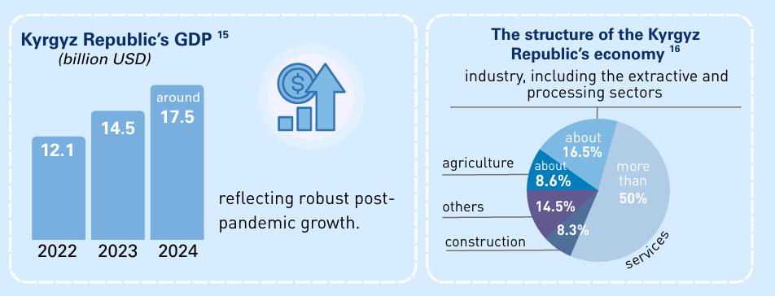
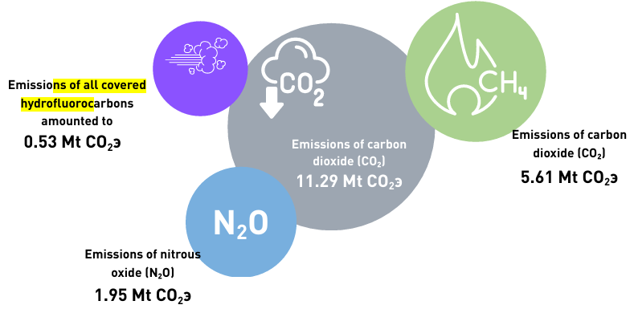
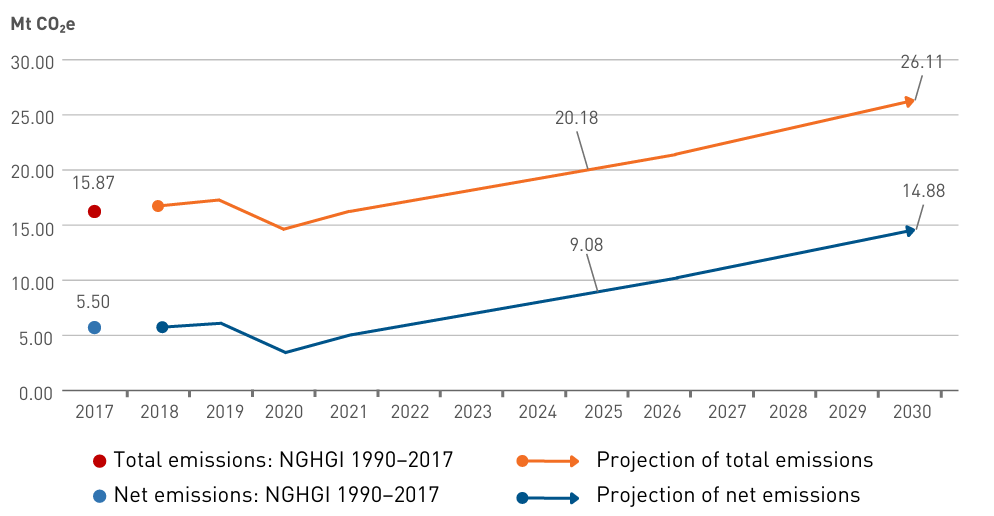
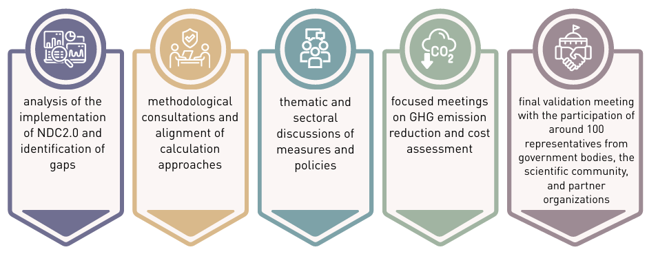
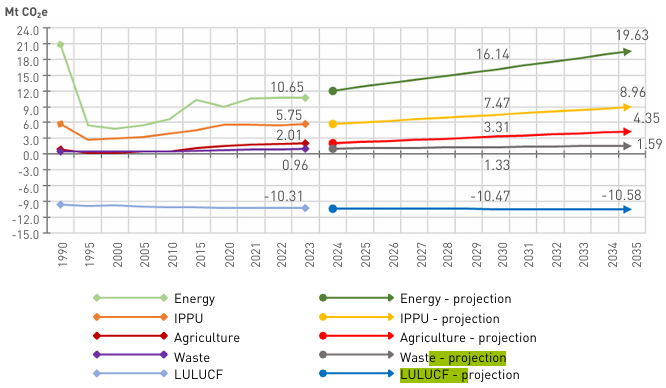
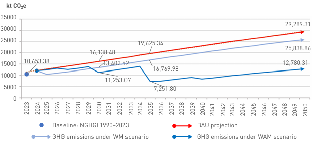
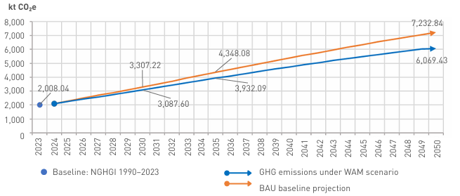
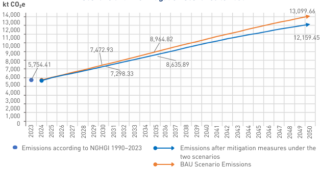
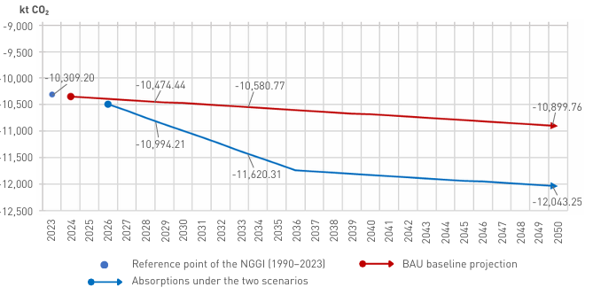
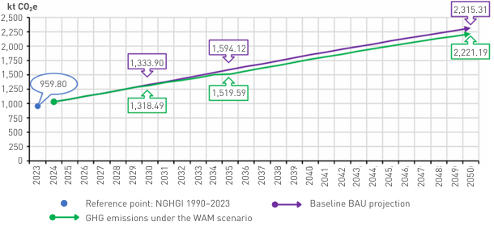

NATIONALLY DETERMINED CONTRIBUTION OF THE KYRGYZ REPUBLIC
NDC3.0
Bishkek, 2025
The cover design incorporates the Warming Stripes of Kyrgyzstan for the period 1863–2024, developed by Ed Hawkins https://showyourstripes.info
|
ADB |
Asian Development Bank |
|
ATMS |
Automated Road Traffic Management System |
|
BAU |
Business as usual |
|
CAA |
Civil Aviation Agency of the Kyrgyz Republic |
|
CDIA |
Community Development and Investment Agency of the Kyrgyz Republic |
|
CFC |
Climate Finance Center |
|
CGA |
Comprehensive Gender Approach |
|
CNC-KR |
Carbon Neutrality Concept of the Kyrgyz Republic |
|
CNG |
Compressed Natural Gas |
|
COP |
Conference of the Parties |
|
EBRD |
European Bank for Reconstruction and Development |
|
ES |
Emergency Situations |
|
ETF |
Enhanced Transparency Framework |
|
EU |
European Union |
|
FEC |
Fuel and Energy Complex |
|
FEZ |
Free Economic Zone |
|
GCF |
Green Climate Fund |
|
GDP |
Gross domestic product |
|
GHG |
Greenhouse gases |
|
GST |
Global Stockcount |
|
HFC |
Hydrofluorocarbons |
|
HPP |
Hydroelectric power plant |
|
IAWG |
Interagency Working Group |
|
IFIs |
International Financial Institutions |
|
IPCC |
Intergovernmental Panel on Climate Change |
|
IPPU |
Industrial processes and product use |
|
KR |
Kyrgyz Republiс |
|
KSRI-AFP |
Kyrgyz Scientific Research Institute of Animal Farming and Pastures under MWRAPI |
|
KSRI-I |
Kyrgyz Scientific Research Institute of Irrigation under MWRAPI |
|
LSGBs |
Local Self-Government Bodies |
|
LULUCF |
Land use, land-use change, and forestry |
|
MFA |
Ministry of Foreign Affairs of the Kyrgyz Republic |
|
MRV |
Measurement, Reporting and Verification |
|
MCAHCS |
Ministry of Construction, Architecture and Housing and Communal Services of the Kyrgyz Republic |
|
MDDT |
Ministry of Digital Development and Trade of the Kyrgyz Republic |
|
MEC |
Ministry of Economy and Commerce of the Kyrgyz Republic |
|
MEN |
Ministry of Energy of the Kyrgyz Republic |
|
MENL |
Ministry of Enlightenment of the Kyrgyz Republic |
|
MES |
Ministry of Emergency Situations of the Kyrgyz Republic |
|
MH |
Ministry of Health of the Kyrgyz Republic |
|
MLSPY |
Ministry of Labor, Social Protection and Youth of the Kyrgyz Republic |
|
MNRETS |
Ministry of Natural Resources, Ecology and Technical Supervision of the Kyrgyz Republic |
|
MSHEII |
Ministry of Science, Higher Education and Innovation of the Kyrgyz Republic |
|
MWRAPI |
Ministry of Water Resources, Agriculture and Processing Industry of the Kyrgyz Republic |
|
NAP |
National Adaptation Plan |
|
NAS |
National Academy of Sciences |
|
NC |
National Communication |
|
NCOs |
Non-commercial organizations |
|
NDC |
Nationally Determined Contribution |
|
NGHGI |
National greenhouse gas inventory |
|
NGOs |
Non-governmental organizations |
|
NMVOC |
Non-methane volatile organic compounds |
|
NSC |
National Statistics Committee of the Kyrgyz Republic |
|
PFC |
Perfluorocarbons |
|
PPP |
Public-private partnership |
|
RES |
Renewable energy sources |
|
SACSLGA |
State Agency for Civil Service and Local Self-Government Affairs under the Cabinet of Ministers of the Kyrgyz Republic |
|
SDGs |
Sustainable Development Goals |
|
SPP |
Solar Power Plant |
|
UN |
United Nations |
|
UNDP |
United Nations Development Programme |
|
UNFCCC |
United Nations Framework Convention on Climate Change |
|
VNR |
Voluntary National Review on Achieving SDGs in the Kyrgyz Republic |
|
WAM |
With additional measures (conditional targets with country's internal resources) |
|
WB |
World Bank |
|
WM |
With measures (unconditional targets with country's internal resources) |
|
WTO |
World Trade Organization |
The Kyrgyz Republic has prepared its third Nationally Determined Contribution (NDC3.0) in accordance with the decisions of the Conference of the Parties to the Convention (1/CP.211) and the Paris Agreement: Decisions 4/CMA.1, 1/CMA.3, 5/CMA.3, 1/CMA.4, 1/CMA.5, and 1/CMA.6.
Although the share of the Kyrgyz Republic (KR) in global greenhouse gases emissions (GHG) is less than 0.034%, the country is among the most vulnerable to the impacts of climate change. In Asia, including Central Asia, temperatures are rising almost twice as fast as the global average, posing threats to food security and agriculture, water resources and hydropower potential, the resilience of livelihoods and also ecosystems and communities. For a mountainous, landlocked, and climate-sensitive country these risks are existential.
NDC3.0 establishes a unified framework for the country’s development in the context of climate change and serves as a basis for planning, monitoring, and mobilizing finance. The contribution is based on internationally recognised methodology and fully complies with the requirements of the Enhanced Transparency Framework (ETF)2 and the national IGHG inventory follows the 2006 Intergovernmental Panel on Climate Change (IPCC) Guidelines. The mitigation targets are for 2030–2035, while the period for implementing adaptation goals extends to 2030. NDC3.0 demonstrates the readiness of the Kyrgyz Republic to undertake ambitious measures both for mitigating GHG emissions and for adapting to climate change. It sets out concrete steps and timelines, anchoring the country’s long-term development objectives.
Unconditional targets of NDC3.0 KR3 provide for a reduction of net GHG emissions by 18% from the projected baseline level of net emissions in 2030 and by 16% from the projected baseline level of net GHG emissions in 2035.
Conditional targets of NDC3.0 KR4 provide for a reduction of net GHG emissions by 30% in 2030 relative to the projected baseline level of net GHG emissions for that year, and by 39% from the projected baseline level of net GHG emissions in 2035.
The development of NDC3.0 of the Kyrgyz Republic (including the NDC implementation plan) was carried out within the framework of a comprehensive government approach under the coordination of the Ministry of Natural Resources, Ecology and Technical Supervision of the Kyrgyz Republic (MNRETS), the authorised body on environmental protection, ecology, and climate change.
An Interagency Working Group5 was set up, involving key ministries and agencies. Its work was facilitated by open consultations at national and regional levels with a broad range of stakeholders — experts, representatives of academia and civil society, the private sector, including women, children and youth, persons with disabilities, and other socially vulnerable groups. This inclusive process ensured the integration of the principles of just transition, gender equality, and social inclusion into climate policy and the measures for implementing NDC3.0.
The main climate change mitigation policies and measures (mitigation) under NDC3.0 are identified in the sectors of Energy, Transport, Agriculture, Land use, land use change, and forestry (LULUCF), Industrial processes and product use (IPPU), and Waste.
Large-scale RES and HPP projects
Expanding the use of low emission and alternative modes of transport
Gasification
Energy efficiency of buildings and district heating systems
Power grid loss reductions
Introducing intelligent traffic management systems (ITMS)
Implementation of the Kigali Amendment (phasedown of HFCs) and strengthened accounting of HFC-containing equipment — new mitigation measures block for the sector in the country
Consistent reduction in carbon intensity in industry
Stimulation of technological transition to move closer to the level of full decarbonization
Energy
Transport
The updated package of measures includes
IPPU
Improving livestock productivity
Management of organic waste and methane
Sustainable pasture management
Improved wastewater management
Reforestation
Waste recycling/processing
Organic farming
Agriculture and LULUCF
Waste
NDC3.0 integrates adaptation, giving priority attention to water resources and agriculture, energy, infrastructure and cities, forest ecosystems and biodiversity, health care and disaster risk management, operationalising the National Adaptation Plan (NAP) through sectoral objectives.
NDC3.0 emphasises inclusiveness: the active involvement of women, children, youth, and vulnerable groups in both the planning and implementation of measures through training, local projects, and participation mechanisms. It also highlights the need to expand public oversight and monitoring at local levels, as well as to strengthen operational preparedness for Emergency Situations (ES), including early warning systems, rapid access to assistance, and assessment of damages and losses.
NDC 3.0 is aligned with the State Programme for Biodiversity Conservation for 2025–2040 currently under development: biodiversity conservation and nature-based solution objectives are incorporated as multipliers of adaptive resilience.
The mountain context is a cross-cutting matter of adaptation: priority is given to measures that reducing local mountain hazards risks and enhancing the resilience of systems (flood and mudflow management, sustainable irrigation, conservation corridors in upstream areas, protection and reforestation of forests and pastures, and resilience of mountain infrastructure).
Thus, NDC3.0 not only reflects the country's national ambitions in the field of adaptation but also highlights Kyrgyzstan's leading role and active participation in shaping the global mountain agenda, taking into account the specific nature of climate change in a country with a complex terrain.
The targets, objectives, and measures of NDC3.0 were developed in close alignment with national strategic documents and coordinated with ongoing programmatic frameworks of the Kyrgyz Republic, including the forthcoming State Programme for Biodiversity Conservation for 2025–2040. The key indicators and objectives of this programme have been integrated to ensure synergies between mitigation and adaptation, as well as with the country’s Land Degradation Neutrality (LDN)6 goals. This reflects the systemic approach adopted by the country to fulfil its international commitments under conventions and agreements, particularly the Paris Agreement the Convention on Biological Diversity, Convention to Combat Desertification while simultaneously contributing to reducing climate risks and preserving biodiversity and sustainable land management.
NDC3.0 incorporates lessons learned from the implementation of NDC2.0, particularly those related to inclusiveness and the identification of population vulnerability to climate challenges and risks. NDC3.0 sets clear criteria for understanding socially vulnerable groups and is also aimed at reducing population vulnerability, preventing gender and social discrimination, and preparing the country for future climate challenges.
NDC3.0 enshrines “climate literacy” as a cross-cutting task: integrating climate topics into school and university curricula, as well as into technical and vocational education and training (TVET);7 preparing teachers; expanding non-formal learning opportunities for communities (including mountain and rural areas); supporting youth initiatives and women’s leadership; and promoting media awareness. Emphasis is placed on skills for sustainable professions (Green skills),8 “early warning literacy,” and the use of climate services and digital tools at the local level.
The document defines socially vulnerable groups as populations with low income, a high share of expenses on housing and communal services, dependence on employment in the carbon-intensive economy, residence in remote areas with limited access to services, incapacity for work (including temporary), as well as those exposed to gender and social discrimination (women, ethnic minorities, migrants, persons with disabilities, children and youth, the elderly, and undocumented persons).
Introduced into the national agenda for the first time, the concept of a just transition ensures that climate measures and the shift to low-carbon development are carried out in an inclusive and socially equitable manner, without increasing inequality or vulnerability.
An interim assessment of NDC2.0 implementation of:
64%
mitigation measures
аdaptation measures
have been fully or partially implemented
71.4%
have been fully or partially implemented
were implemented, either fully or partially. However, most of the measures implemented were short-term and depended primarily on domestic resources. Measures requiring external financing, systemic reforms, or large-scale infrastructure still need additional resource mobilization. Building on this, NDC3.0 shifts the focus to urgent resource mobilization by attracting financing from climate funds and International Financial Institutions (IFIs), introducing blended and results-based financing mechanisms, and engaging the private sector.
The total financing needs for mitigation and adaptation tasks and measures under NDC3.0 are estimated at USD 23 billion. Of this amount, already identified and programmed—primarily from the state budget, the private sector, development partners and donors, including public investment projects—amounts to about USD 13.7 billion, while the financing gap (deficit) stands at around USD 9.3 billion.
a mix of state budget, private capital;
The additional financial requirements for implementing climate measures through 2035 are estimated around
USD 9.3 BILLION
to be sourced from
international support from multiple sources (climate funds, IFIs, development partners), utilizing a range of financing instruments (grants, concessional loans, etc.)
Thus, NDC3.0 combines clear GHG reduction targets for 2030 and 2035 includes adaptation goals with expanded institutional and financial readiness, strengthened inclusiveness, and the foundation for a GHG accounting system aligned with the Paris Agreement (PA) and the ETF. With timely access to external resources and the launch of the proposed financial instruments, the NDC can deliver both sustainable GHG reductions and tangible protection for the population and the economy against escalating climate risks.
The process of NDC3.0 formulation was coordinated by MNRETS, which led the Interagency Working Group to ensure alignment of methodologies, baseline data, and priority measures across key ministries and agencies.
United Nations Development Programme (UNDP) in KR acted as the lead technical agency, working in partnership with UN agencies9 under the coordination of the UN Resident Coordinator and his office within the “One UN” approach, as well as with international financial institutions (WB, ADB, EBRD, and others) and development partners (EU, IRENA,10 NDC Partnership,11 and others). This collaboration provided methodological support and ensured access to advanced knowledge, technical assistance, and necessary resources.
The targets and objectives of NDC3.0 are subject to approval by the Coordinating Council on Ecology, Climate Change, and Green Economy Development, followed by submission to the UNFCCC Secretariat. The detailed NDC3.0 Implementation Plan (an operational document) including a list of measures and policy actions with all NDC3.0. sectors, estimated mitigation potential, cost estimates, designation of responsible agencies, and contributions from the private and civil sectors is prepared as an internal document for execution. The Plan is a “living” document, updated as financing becomes available, as monitoring results emerge, and in accordance with the decisions of the Coordinating Council.
The process included national consultations with the participation of the scientific community, business, NGOs, and local communities, with special mechanisms to engage women, youth, and vulnerable groups in order to integrate the principles of gender equality, inclusion, and just transition. This format of the preparation process strengthened the quality of data and the consistency of NDC3.0 targets, expanded the scope of climate measures, and transformed NDC3.0 into a practical tool for inter-agency coordination and the country’s readiness for climate action.
To ensure clarity, transparency, and understanding of NDC3.0 , this overview presents concise information on the targets for 2030 and 2035, including methodological and accounting details, as well as the rationale for why the country considers its targets fair and ambitious, and how the outcome from the Global Stocktake under the Paris Agreement was considered. Further detailed information to ensure clarity, transparency and understanding of NDC3.0 is provided in an Annex 1 to this document in accordance with requirements of decision 4/CMA.1. The information is summarized in the following table:
|
Implementation Period 2026–2035 |
|
|
Methodological approaches for estimating anthropogenic GHG emissions by source and removals by sink The methodological approaches used by Kyrgyzstan for estimating anthropogenic emissions by source and removals by sink are those adopted by IPCC and agreed by the Conference of the Parties serving as the meeting of the Parties to the Paris Agreement (CMA), including the 2006 IPCC Guidelines for National Greenhouse Gas Inventories (2006 IPCC Guidelines) |
|
|
Type of Commitment А single year target |
|
|
Base (Reference) Year 2017 |
Use of market mechanisms and co-operative approaches The NDC of Kyrgyzstan by 2035 represents the best possible effort to achieve significant emission reduction below the projected base-line emission levels mostly through policies and measures supported by domestic sources. It may achieve higher levels of emission reduction with commensurate international climate finance, technology and capacity building support. It may engage in market mechanisms and co-operative approaches envisaged under the Paris Agreement when there is more clarity on how these mechanisms and approaches may work and deliver in the national context of Kyrgyzstan. |
|
GHG emission reduction level Unconditional targets of NDC3.0 of the Kyrgyz Republic provide for a reduction of net GHG emissions by 18% from the projected baseline level of net emissions in 2030 and by 16% from the projected baseline level of net GHG emissions in 2035. Conditional targets of NDC3.0 of the Kyrgyz Republic provide for a reduction of net GHG emissions by 30% in 2030 from the projected baseline level of net GHG emissions for that year, and by 39% from the projected baseline level of net GHG emissions in 2035. These targets reflect country’s updated mitigation strategy by 2030 that now forms part of its NDC3.0. |
|
|
Scope and coverage The target covers the entire economy and includes all gases, sectors, and categories in accordance with the National GHG Inventory. |
Methodologies for Accounting under the NDC For accounting purposes, NDC3.0 compares net GHG emissions in the target years 2030 and 2035, as calculated in the National GHG Inventory, with the baseline scenario for these years. This method is consistent with the National GHG Inventory and follows the 2006 IPCC Guidelines and other CMA- adopted guidance. |
|
Covered Sectors Energy (including transport), industrial processes and product use, agriculture, land use, land-use change, and forestry (LULUCF) and waste. |
Fairness and Ambition of the NDC, and consideration of recommendations from the Global Stocktake12 adopted at the Conference of the Parties in 2023 (COP28). In preparing NDC3.0, the Kyrgyz Republic considered national circumstances, availability of natural resources, climate finance needs, sustainable development priorities, and the feasibility of measures to achieve significant emission reductions below the baseline, alongside adaptation readiness. The NDC3.0 represents an essential step toward achieving carbon neutrality by 2050, in line with the global trajectory outlined in the IPCC Sixth Assessment Report to limit warming to 1.5 °C. Implementation of NDC3.0 measures is expected to generate social and economic co-benefits, including increased energy and food security, new jobs, improved air quality, and technological innovation. Reflecting recommendations from the Global Stocktake, Kyrgyz Republic is accelerating its decarbonisation efforts: the share of non-traditional RES in the energy balance is projected to more than triple through construction of solar and wind power plants, small HPP, and grid reinforcement. Simultaneously, measures to enhance energy efficiency and modernise infrastructure will improve the energy intensity of GDP, further demonstrating the country’s commitment to ambitious climate goals. |
|
Covered Greenhouse Gases Carbon dioxide (CO₂), methane (CH₄), nitrous oxide (N₂O), hydrofluorocarbons (HFCs), perfluorocarbons (PFCs), sulphur hexafluoride (SF₆), and nitrogen trifluoride (NF₃). Emissions of PFCs, NF₃ and SF₆ do not occure in the Kyrgyz Republic. |
The global triple planetary crisis
Climate change, biodiversity loss, and pollution — has a specific mountain dimension in the Kyrgyz Republic. Cryosphere degradation alters hydrological regimes; ecosystem fragmentation and soil degradation reduce the productivity of pastures and the agricultural sector; and air pollution in valleys, combined with waste management problems, exacerbates health risks, particularly for children and youth, the elderly, and groups with limited access to services.
The Kyrgyz Republic is a mountainous country with high climate vulnerability. Climate change is already manifesting through accelerated glacier retreat, increased frequency and intensity of floods, mudflows, and landslides, as well as more frequent heatwaves and droughts. These changes directly affect water and energy security, agriculture, public health, and infrastructure resilience.
Climate risks have a measurable impact on human development, affecting health, income and employment, access to education, and basic services. This burden falls disproportionately on rural and high-mountain areas, women, youth, persons with disabilities, and low-income households. Policy must be guided by the principles of just transition and gender equality to ensure that benefits and costs are shared fairly.
The geographic uniqueness of the Kyrgyz Republic — the “water tower” of the region, its cryosphere, forests, and pastures — defines national priorities and international positioning. Advancing the mountain agenda means conserving and restoring natural capital, protecting against natural disasters, and promoting sustainable growth.
For the Kyrgyz Republic, this entails a course towards three interlinked outcomes:
ADAPTATION AND RESILIENCE:
reducing climate risks for people, the economy, infrastructure, agriculture, health care, and early warning systems; ensuring sustainable water use;
promoting climate education; and supporting a just transition.
GHG EMISSION REDUCTIONS:
transforming energy, transport, IPPU, agriculture, and waste management; and improving energy efficiency.
NATURE-BASED SOLUTIONS AND ENVIRONMENTAL QUALITY:
protecting and restoring ecosystems, managing forests and pastures sustainably, and reducing pollution.
Тhis approach provides the foundation for energy and food security and people well-being, supports national and regional stability, and strengthens the country’s position as a responsible participant in international climate and environmental processes.
In this context, NDC3.0 serves as the strategic framework for a course towards low-carbon and climate-resilient development, aligned with the 2030 Agenda for Sustainable Development, the long-term national goal of achieving carbon neutrality13 (CNC-KR), and the Country
Development Programme through 2030. NDC3.0 also takes into account the findings of the first Global Stocktake and the requirements of the Paris Agreement regarding successive, progressively more ambitious contributions (Article 4.9)
This document is a call to action for all key stakeholders: government authorities, the private sector, civil society, and international partners. It drives the transition to a green economy, promotes investment in renewable energy and energy efficiency, and lays the foundation for ensuring the security and prosperity of the Kyrgyz Republic on a new, low-carbon basis.
Socio-economic context
The Kyrgyz Republic is a lower-middle-income country with high dependence on a limited number of economic sectors.14

Kyrgyz Republic’s GDP15
(billion USD)
The structure of the Kyrgyz Republic’s economy16
industry, including the extractive and processing sectors
The Energy sector is highly vulnerable to the impacts of climate change. More than 90% of electricity is generated at hydroelectric power stations, making the economy dependent on water resources while also offering potential for “clean” generation.17 However, climate variability increases the risk of water shortages and reduced electricity generation. Coal remains a significant part of the fuel and energy balance for heat generation, and the energy efficiency of the economy remains low: network losses exceed 17%, above the global average.18
The demographic situation is characterized by population growth: in 2024, the population exceeded 7 million.19 A young age structure creates development potential but also increases the burden on education and health systems and the labour market. The high share of the rural population links climate resilience directly to the quality of life for most citizens.
Political and Institutional Context. The climate policy of the Kyrgyz Republic is increasingly integrated into the national strategic planning system. In 2021, NDC2.0 was adopted, setting emission reduction targets for 2025 and 2030. In 2022, the country submitted its First Biennial Update Report (BUR1)20, in 2024 its Fourth National Communication (NC4) and in 2025, the First Biennial Transparency Report (BTR), which refined data on emissions and progress in implementing climate policy measures.
The Ministry of Natural Resources, Ecology, and Technical Supervision of the Kyrgyz Republic is in charge of co-ordinating climate policy, including policy development and cooperation with international organisations.
The Coordinating Council on Ecology, Climate Change, and Green Economy Development, chaired by the Chairman of the Cabinet of Ministers of the Kyrgyz Republic, serves as the central platform for policy coordination and monitoring the implementation of the environmental, climate, and green agendas.
Legal Context. The legal framework of the Kyrgyz Republic’s climate policy is formed by the Law of the KR “On Environmental Protection,” the Water and Forest Codes, and sectoral legal regulatory acts on energy, transport, agriculture, and waste management. In recent years, documents integrating the climate agenda have also been adopted, including the Energy Sector Development Strategy and the Waste Management Programme. In January 2025, the draft Law of the KR “On Climate Action” was released for public review, aimed at creating a comprehensive regulatory system (objectives and principles, measurement, reporting and verification, planning and assessment of climate actions, climate finance, development of climate technologies and innovations, climate education and capacity building). The draft Law of the KR “On Glaciers” is also under discussion. At the same time, secondary regulations require further development, including energy efficiency standards, methane and N₂O management, climate-resilient construction standards, and rules for accounting and disclosure of climate risks.
The National Report on the Inventory of GHG Emissions and Removals for 1990–2023, presented in 2025,21 describes total and net GHG emissions, as well as the dynamics of emissions by direct greenhouse gases: carbon dioxide — CO₂; methane — CH₄; nitrous oxide — N₂O; and hydrofluorocarbons — HFCs. It also reports on perfluorocarbons (PFCs), sulphur hexafluoride (SF₆), and nitrogen trifluoride (NF₃), emissions of which have not been observed in the Kyrgyz Republic.
In addition, an assessment is conducted for four indirect GHG precursors: nitrogen oxides — NOₓ; carbon monoxide — CO; non-methane volatile organic compounds — NMVOC; and sulphur dioxide — SO₂, across five sectors: Energy, IPPU, Agriculture, LULUCF, and Waste. The reference year for this inventory is 1990.

Emissions of all covered hydrofluorocarbons amounted to
0.53 Мt СО2э
Emissions of nitrous oxide (N₂O)
1.95 Мt СО2э
Emissions of carbon dioxide (CO₂)
11.29 Мt СО2э
Emissions of carbon dioxide (CO₂)
5.61 Мt СО2э
Total GHG emissions from all sources and for all gases in 2023 amounted to 19.38 Mt CO₂e, while removals by sinks amounted to 10.31 Mt CO₂, net GHG emissions were 9.07 Mt CO₂e.
The largest share of GHG emissions came from the Energy sector — 10.65 Mt CO₂e, or 55% of total GHG emissions in 2023, which is 48.8% lower than the 1990 level. Within the Energy sector, the largest share of emissions came from Transport — 3.60 Mt CO₂e, or 33.8% of sector emissions; the Energy industries category contributed 3.32 Mt CO₂e, or 31.1%; “Other sectors” (small boilers and the residential sector) contributed 2.56 Mt CO₂e, or 24%; Fugitive emissions from fuels amounted to 0.64 Mt CO₂e, or 6%; and Manufacturing industries and construction accounted for 0.53 Mt CO₂e, or 5% of sector emissions.
In 2023, the second-largest source of GHG emissions after the Energy sector was Agriculture, with emissions of 5.75 Mt CO₂e, or 29.7% of total emissions in the Kyrgyz Republic, which is 0.1% higher than in 1990. The largest share of agricultural emissions came from “Enteric fermentation”, amounting to 3.78 Mt CO₂e, or 65.8% of the sector’s total emissions, followed by “Direct N₂O emissions from managed soils”, which amounted to 0.88 Mt CO₂e, or 15.2% of the sector’s total. Emissions from “Manure management” were 0.51 Mt CO₂e, or 8.8% of the sector total. “Indirect N₂O emissions from managed soils” were 0.31 Mt CO₂e, or 5.4% of the sector total, while Indirect N₂O emissions from manure management accounted for 0.19 Mt CO₂e, or 3.3%. Emissions from Rice cultivation were 0.07 Mt CO₂e, or 1.2%, and emissions from the use of Urea were 0.015 Mt CO₂e, or 0.3% of the sector total.
The third-largest source of GHG emissions was the Industrial Processes and Product Use (IPPU) sector, with emissions of 2.01 Mt CO₂e, or 10.4% of total emissions in 2023, which is 130.38% higher than in 1990. Within this sector, emissions from Cement production amounted to 1.4 Mt CO₂e, or 69.5% of the sector’s total; Refrigeration and air conditioning contributed 0.49 Mt CO₂e, or 24.5%; Foam blowing agents accounted for 0.035 Mt CO₂e, or 1.7%; Ceramics contributed 0.029 Mt CO₂e, or 1.5%; Lime production amounted to 0.02 Mt CO₂e, or 1.01%; and Glass production contributed 0.02 Mt CO₂e, or 1%. Emissions from Lubricant use were 0.015 Mt CO₂e, or 0.8% of the sector total. Emissions from the Metallurgical industry amounted to 0.002 Mt CO₂e, or 0.01%, and emissions from Paraffin use were 0.0006 Mt CO₂e, or 0.003% of the sector total.
In 2023, the fourth-largest source of GHG emissions was the Waste sector, with emissions of 0.96 Mt CO₂e, or 5% of total emissions in the Kyrgyz Republic, which is 97.5% higher than in 1990. The largest share came from Wastewater treatment and discharge, accounting for 0.56 Mt CO₂e, or 58.6% of the sector’s total emissions. Solid waste disposal contributed 0.38 Mt CO₂e, or 39.8%. Emissions from Incineration and open burning of waste amounted to 0.013 Mt CO₂e, or 1.4% of the sector total, while biological treatment of solid waste contributed 0.002 Mt CO₂e, or 0.2%.
The Land Use, Land-Use Change, and Forestry (LULUCF) sector functions as a CO₂ sink, with total removals of 10.21 Mt CO₂ in 2023, an increase of 6.9% compared to 1990. Removals occur across three categories: Forest land — 8.21 Mt CO₂, or 79.7% of all removals; Cropland — 1.77 Mt CO₂, or 17.1%; and Grassland — 0.33 Mt CO₂, or 3.3% of the sector’s total CO₂ removals.
Table 1 shows emissions in megatonnes of CO₂e by major sources over the period 1990–2023, as well as in the NDC base year 2017.
Table 1: GHG Emissions and Removals in 1990, 2017 and 2023.
|
Source |
1990 |
2017 |
2023 |
Change 1990–2017, Mt CO₂e |
Change (1990–2017), % |
Change (1990-2023), Mt CO₂e |
Change (1990–2023), % |
Energy |
20.79 |
9.67 |
10.65 |
-11.13 |
-53.5 |
-10.14 |
-48.8 |
IPPU |
0.87 |
1.30 |
2.01 |
0.43 |
49.1 |
1.14 |
130.4 |
Agriculture |
5.75 |
4.80 |
5.74 |
-0.95 |
-16.6 |
-0.01 |
-0.1 |
Waste |
0.49 |
0.70 |
0.96 |
0.21 |
43.5 |
0.5 |
97.5 |
Total Emissions |
27.90 |
16.46 |
19.38 |
-11.44 |
-41.0 |
-8.52 |
-30.5 |
LULUCF |
-9.64 |
-10.22 |
-10.31 |
-0.58 |
5.97 |
-0.7 |
6.9 |
Net Emissions |
18.26 |
6.24 |
9.07 |
-12.01 |
-65.8 |
-9.2 |
-50.3 |
During 2017–2023, total GHG emissions increased by 17.7%, while annual GHG removals in the Land Use and Forestry sector grew by 0.9%. As a result, net emissions rose by almost 45.2%, from 6.2 Mt CO₂e in 2017 to 9.07 Mt CO₂e in 2023. This indicates that the rate of emission growth significantly outpaced the removals by natural ecosystems.
Table 2 below presents GHG emissions by gas type in Mt CO₂e for the time series 1990–2023, as well as for the NDC base year 2017.
Table 2. GHG Emissions by Type, 1990, 2017 and 2023.
|
Gases |
1990 |
2017 |
2023 |
Change 1990–2017, Mt CO₂e |
Change (1990–2017), % |
Change 1990-2023, Мт СО2э |
Change (1990–2023), % |
СО2 |
20.31 |
9.92 |
11.29 |
-10.39 |
-51.2 |
-9.02 |
-44.4 |
СН4 |
5.04 |
4.68 |
5.61 |
-0.36 |
-7.2 |
0.57 |
11.3 |
N2O |
2.55 |
1.30 |
1.95 |
-1.25 |
-49.1 |
-0.60 |
-23.4 |
HFC |
NO |
0.56 |
0.53 |
0.56 |
NА |
0.53 |
NА |
PFC |
NO |
NO |
NO |
NА |
NА |
NА |
NА |
SF6 |
NO |
NO |
NO |
NА |
NА |
NА |
NА |
Итого, CO₂e |
27.90 |
16.46 |
19.38 |
-11.44 |
-0,04 |
-8.5 |
-30.5 |
Общие
выбросы
ЗИЗИЛХ
Methane, as the second most significant GHG in total emissions, accounts for about 30% of gross GHG emissions. However, in CO₂-equivalent terms, its levels already approach those of carbon dioxide — in different years reaching 40–55% of CO₂ emissions. This makes the Kyrgyz Republic one of the few countries where methane is nearly equivalent to carbon dioxide as a driver of overall GHG emission growth. Without targeted methane management programs, there remains a risk of further increases in total emissions underpinned by the growth of methane emissions, even if other gases and sources stabilize.
In 2023, carbon dioxide (CO₂) remained the principal greenhouse gas (GHG), representing 58% of total emissions. Its trend is largely determined by fossil fuel combustion in the energy sector and by industrial processes. Methane (CH₄) constituted approximately 29% of total GHG emissions in 2023, thus being the second most significant gas in the emissions profile. Its emissions continued to rise, primarily due to the increase in livestock populations, as well as higher levels of solid waste and wastewater. Nitrous oxide (N₂O) emissions declined slightly, amounting to about 10% of total GHG emissions in 2023. This trend is mainly associated with the extent of nitrogen fertiliser application and the growing levels of manure and wastewater. Emissions of hydrofluorocarbons (HFCs) also showed a downward trend, contributing around 3% of total GHG emissions in 2023, predominantly linked to their use in refrigerants and foam- blowing agents.
According to the ND-GAIN Vulnerability and Readiness Index (2023), the KR ranks 70th, with a vulnerability score of 0.311 (lower is better) and a readiness score of 0.334 (higher is better). Accordingly, among the countries assessed, the Kyrgyz Republic ranks 173rd in vulnerability and 113th in readiness. Vulnerability is moderate, while the country’s readiness is below average; the main gap lies in institutional and economic readiness, which is essential for scaling up adaptation measures.
For the Kyrgyz Republic, adaptation is a top priority, as climate risks are already causing direct damage to people and the economy.
Therefore, NDC3.0 emphasizes adaptation as a cross-cutting policy (covering water, health, cities and infrastructure, agriculture, and mountain ecosystems), while maintaining mitigation commitments but prioritizing resources, planning, and monitoring around the protection of people and livelihoods.
Climate Trends and Impacts
Temperature trends in the Kyrgyz Republic demonstrate accelerated warming: between 1885–2010, the average rate of increase was about 0.01 °C/year; in 1960–2010, about 0.024 °C/year; and in 1990–2010, already about 0.07 °C/year. The seasonal pattern of change is pronounced: the highest increase occurs in late winter and spring (especially March — up to \~0.1 °C/year; on average in spring \~0.07 °C/year), and the lowest in November–December and August. By region, winter trends range from \~0.01 °C/year (Chuy, Issyk-Kul) to \~0.03 °C/year (Batken, Osh, Talas); in summer, about \~0.02 °C/year in most oblasts, but less than 0.01 °C/year in Jalal-Abad; in November, trends are near zero or slightly negative, except in Naryn (\~+0.04 °C/year). The shift of peak warming into spring distorts water supply regimes, shortens the snow accumulation period, and disrupts crop cycles, simultaneously affecting both agriculture and hydropower.
For high-mountain basins, the date of peak water discharge has shifted by \~50 days (toward late July), with lower peak flows following a short-term increase linked to intensified glacier meltwater. Precipitation regimes show a rise in extreme events — flash floods, river floods, and mudflows. Hydrological variability increases the vulnerability of water supply and hydropower; droughts and extreme rainfall reduce crop yields and accelerate pasture degradation.
For adaptation planning, it is critical to understand the shift in “critical” impacts: earlier snowmelt and runoff peaks, more frequent early-spring floods and mudflows, shorter soil moisture accumulation periods, and changes in the agricultural calendar; in summer — increased heat stress combined with persistent drought risks. Accordingly, priorities include early-spring hydrological forecasts for managing hydropower and irrigation, measures to reduce flood and mudflow risks, adjustments to agricultural practices and calendars, and the development and implementation of urban heatwave preparedness plans.
Social aspects of adaptation
Climate risks exacerbate pressures on the healthcare system, leading to increased injuries and greater vulnerability of the sector during heatwaves and outbreaks of climate-sensitive and infectious diseases. Social differentiation is a critical factor to take into account in adaptation reponses. Women in rural areas often have limited access to resources, technologies, and decision-making processes, which constrains their ability to respond effectively to climate shocks. Social norms and gender roles may further restrict access to information, finance, and mobility, thereby reinforcing existing inequalities. Therefore, adaptation policies need to be gender-responsive and socially inclusive, considering differences across gender, age, and physiological characteristics.
Technological Aspects of Adaptation
In the Kyrgyz Republic, adaptation technologies are at an early stage of deployment. Implementation to date has been largely project-based, focusing on drip irrigation, drought- tolerant seed varieties and soil-moisture conservation practices. Engineering measures to protect against debris flows and flood risks are being introduced gradually. Multi-hazard early warning systems (EWS) for floods, debris flows and droughts are under development, but their coverage and technical capabilities remain limited. A comprehensive approach to climate-resilient urban planning has yet to be established; actions are mostly localised—rehabilitation of storm-water drainage, bank protection and partial upgrades of wastewater infrastructure. Climate risks to public health are considered sporadically, and many health facilities are not yet adequately adapted to extreme weather conditions.
Degree of Institutionalisation of Adaptation Issues
As a result of the preparation of the NAP, a basic foundation for adaptation has been established in the Kyrgyz Republic: recommended mechanisms for vertical and horizontal coordination on adaptation issues, preparation of risk and vulnerability profiles, and strengthened planning and monitoring mechanisms in priority sectors. The next step is to deepen and scale up this integration: linking priority measures to national and sectoral programmes and the budget cycle, ensuring sustainable financing, and fostering participation of the private and civil sectors. The key task is to make adaptation a holistic policy that combines climate, social, and technological aspects. NDC3.0 serves as a framework that consolidates NAP priorities, sets common targets and indicators, distributes roles, and ties them to financing sources — in order to consistently reduce the vulnerability of the population and economy and increase preparedness for future climate risks.
In accordance with the provisions of the Paris Agreement, the Kyrgyz Republic submitted its first NDC in 2015 and updated it in 2021 with an ambitious unconditional target: to reduce net GHG emissions by 16.63% from the baseline scenario level by 2025 and by 15.97% by 2030. With international support (financial, technological, and capacity-building), net GHG emissions were expected to be reduced by 36.61% from the baseline scenario level in 2025 and by 43.62% from the baseline scenario level in 2030, with certain sector-specific objectives.
NDC2.0 became the Kyrgyz Republic’s plan for mitigating the impacts of climate change and its contribution to global efforts to reduce GHG emissions, setting priority areas for low-carbon transformation through 2030 in line with national priorities and the Sustainable Development Goals.
Based on these data, a projection of total and net emissions for the planned period 2017– 2030 was developed and presented in NDC2.0 (see Figure 1).
Figure 1. Projection of Total and Net GHG Emissions for 2017-2030

Total emissions: NGHGI 1990–2017 Net emissions: NGHGI 1990–2017
Projection of total emissions Projection of net emissions
The NDC2.0 implementation plan included a list of detailed mitigation and adaptation measures, divided into two categories: unconditional — under the “With Measures” (WM) scenario, and conditional — under the “With Additional Measures” (WAM) scenario, subject to external financing.
Thus, the main indicator for tracking implementation and achievement of NDC is the net GHG emissions, which depend on national GHG inventory data — used not only for assessing net GHG emissions, but also for preparing projections of net GHG emissions, against which NDC progress is assessed.
Implementation of NDC2.0 in the Kyrgyz Republic shows moderate progress:
64% mitigation measures have been fully or partially implemented
71.4% аdaptation measures have been fully or partially implemented
Mitigation measures planned for implementation using the country’s own resources (WM) were almost all fully or partially implemented (94.1%). A different picture emerged with the implementation of mitigation measures requiring external resources (WAM): only about 65% of these measures were fully or partially realized. 25,000 m³ have been constructed.
The country made maximum efforts to implement NDC2.0 within the limits of its available financial, technical, and human resources, but dependence on external support prevented the full implementation of additional measures, underscoring the need for enhanced, coordinated efforts to mobilize climate finance from all available external sources.
The Kyrgyz Republic has been demonstrating steady progress in implementing mitigation measures across the energy, transport, industry, agriculture and forestry, and waste management sectors. In the energy sector, energy efficiency measures have been implemented in 21 public buildings, 15 coal-fired boilers in Bishkek have been converted to gas, the national gasification rate has increased from 22% in 2014 to 42% in 2024, and solar and wind power plants with a total capacity of over 400 MW are being constructed in the Issyk-Kul region. As a result of the modernization of large hydropower plants (HPPs), their capacity has increased by 124.84 MW, while small HPPs have grown from 67 MW to 121.45 MW. In the transport sector, the number of electric vehicles has reached 6,859, representing 63.5% of the 2025 target of 10,800 units, and the number of CNG buses in Bishkek has already reached 1,337, exceeding the 2030 target. In industry, a quota system for hydrofluorocarbon (HFC) imports has been introduced within the framework of the Eurasian Economic Union (EAEU). In agriculture, organic farming now covers 53,085.99 hectares, and in forestry, between 2017 and 2024, forest plantations covering 11,988 hectares were established, resulting in a net increase of 27,085 hectares of forest area. In waste management, a sorting station with a capacity of up to 120 tons per day has been commissioned in Osh, and a modern landfill with a gas collection system has been established in Bishkek, allowing for landfill gas utilization. These results confirm the country’s progressive movement toward reducing its carbon footprint and strengthening sustainable development capacity.
Progress has also been achieved in implementing climate change adaptation measures. In the water sector, 5,680 hectares of new irrigated land have been introduced, water supply has been improved over 28,423 hectares, 12,253 hectares of land have been rehabilitated, and two water storage facilities with a total capacity of 125,000 m³ have been constructed. In agriculture, 215 municipal pasture management enterprises have been established, the number of artificial insemination points has increased from 233 in 2021 to 320 in 2025, and 5,000 doses of seed material were imported from South Korea, along with pedigree bulls from the Czech Republic.
In the energy sector, studies on the impact of climate change on energy security have been conducted, networks have been modernized, and 725 budget organizations were surveyed, resulting in energy savings exceeding 17.4 million kWh across two regions. In the field of disaster risk reduction, 10 hydrological posts have been modernized, 23 automatic weather stations installed, MODSNOW software implemented, and an emergency population alert system established, including 36 siren units and the “112” mobile application. In forestry and biodiversity, a development plan for the forestry sector until 2040 has been approved, and the conservation effectiveness of 10 protected areas has been assessed. In the health sector, five scientific studies have been launched, new hospitals and hospital buildings constructed, a centralized emergency care department established, and 10 PCR laboratories opened.
In the field of disaster risk reduction, 10 hydrological posts have been modernized, 23 automatic weather stations installed, MODSNOW software implemented, and an emergency population alert system established, including 36 siren units and the “112” mobile application. In forestry and biodiversity, a development plan for the forestry sector until 2040 has been approved, and the conservation effectiveness of 10 protected areas has been assessed.
In the health sector, five scientific studies have been launched, new hospitals and hospital buildings constructed, a centralized emergency care department established, and 10 PCR laboratories opened. In the cities of Bishkek and Osh, “green” projects are being implemented, including drip irrigation, air quality sensors, expansion of recreational areas, and the electrification of public transport, including the introduction of electric buses. Together, these measures contribute to enhancing the resilience of the country’s infrastructure, economy, and social sectors to climate change.
The Kyrgyz Republic has demonstrated its commitment to integrating climate goals into national and sectoral agendas, including through the development of a regulatory framework, participation in international mechanisms, and implementation of pilot projects. Nevertheless, progress achieved in many sectors remains fragmented, and the degree of implementation often depends on external financing and technical support. Among the most significant challenges are the shortage of financial resources (both domestic and international), limited human and institutional capacity, and the absence of monitoring, reporting, and verification systems for data collection.
The deployment of energy-efficient and low-carbon technologies is progressing slowly, even though the potential for such solutions in the country remains high. Sectors linked to renewable energy, modernization of district heating, development of organic agriculture, and industrial decarbonization face investment shortages, administrative barriers, and insufficient scientific support.
According to estimates prepared in 2025, the total level of GHG reductions under NDC2.0 implementation amounted to 1,481.661 kt CO₂e, or 16.3% of the 2023 net GHG emissions, which stood at 9,066.756 kt CO₂e. Table 3 shows the level of GHG emission reductions by sector and type of mitigation policies and measures.
At the same time, GHG emission reductions from unconditional NDC measures accounted for 92%, while reductions from conditional measures accounted for 8%.
Table 3. GHG Emission Reductions by Sector and Type of Mitigation Policies and Measures
|
Sector |
Policies and Measures |
Reductions, kt CO₂e |
Energy |
Unconditional (WM scenario) |
46.64 |
Conditional (WAM scenario) |
59.357 |
|
Total |
105.999 |
|
|
Transport |
Unconditional (WM scenario) |
119.000 |
Conditional (WAM scenario) |
52.114 |
|
Total |
171.114 |
|
Agriculture |
Unconditional (WM scenario) |
94.853 |
Conditional (WAM scenario) |
0 |
|
Total |
94.853 |
|
|
LULUCF |
Unconditional (WM scenario) |
1,106.196 |
|
Conditional (WAM scenario) |
3.500 |
|
|
Total |
1,109.696 |
|
|
Total, ktCO2e |
Unconditional (WM scenario) |
1,366.689 |
Conditional (WAM scenario) |
114.973 |
|
Total |
1,481.661 |
|
|
Total, % of 2023 net GHG emissions |
Unconditional (WM scenario) |
15.1 |
|
Conditional (WAM scenario) |
1.3 |
|
|
Total 16.3 |
3.500 |
The process of preparing NDC3.0 in the Kyrgyz Republic was based on a comprehensive government-led approach, marked by a high level of inclusiveness and institutional support. A key step was the establishment of an Interagency Working Group (IAWG), comprising more than 50 experts representing key ministries and agencies, municipal structures, academic institutions, international and civil society organizations—including socially vulnerable groups. Ten plenary sessions were held to ensure alignment of methodological approaches, integration of strategic and technical decisions, and the institutionalization of cross-sectoral coordination.
Work on the document was organized through a five-stage process::

analysis of the implementation of NDC2.0 and identification of gaps
methodological consultations and alignment of calculation approaches
thematic and sectoral discussions of measures and policies
focused meetings on GHG emission reduction and cost assessment
final validation meeting with the participation of around 100 representatives from government bodies, the scientific community, and partner organizations
During the process, priority sectors were identified for which mitigation and adaptation measures were developed. These include energy, transport, agriculture, industry and industrial processes, waste, land use and forestry, health, water resources, emergency situations, biodiversity, and sustainable cities, as well as cross-sectoral areas such as social inclusion and climate education.
To broaden stakeholder participation, 12 training sessions were held for 25 government agencies and 32 city administrations (241 participants, 62 percent women), preparing attendees to make a substantive contribution to the process. In January 2025, the NDC3.0 inception forum was held with around 200 representatives from government bodies, NGOs, and businesses. This was followed by technical meetings, focus groups, and sectoral consultations in a hybrid format, ensuring equal access for the regions and the inclusion of vulnerable groups. In total, the consultations documented the involvement of 969 people.
To ensure systematic engagement with vulnerable groups, a national vulnerability assessment framework was developed based on seven criteria: income, employment, isolation, health, discrimination, institutional insecurity, and transition risks. This framework enabled impartial identification of priority groups. Particular emphasis was placed on integrating the principles of just transition, gender equality, and social inclusion (GEDSI mainstreaming) into all stages of document preparation.
The process integrated international commitments and standards, including the requirements of the Enhanced Transparency Framework (ETF), the 2006 IPCC methodology, and the checklists under Decision 4/CMA.1. It also incorporated the UNFCCC Gender Action Plan, which ensured a gender-sensitive approach through the use of gender-disaggregated data and the institutionalization of gender equality. The UNDP principles under the Climate Promise programme further reinforced the focus on transparency, inclusive stakeholder participation, Just Transition, and the protection of human rights.
To facilitate the exchange of international experience, the MNRETS, together with UNDP and UN agencies, organized 10 thematic webinars on just transition, gender equality, human rights, health, and climate finance. In addition, consultations were held with the private sector, including a national training on green finance with participation from the banking community. Particular attention was paid to engaging youth and children: the initiatives “Youth Climate Caravan 2025” and Climate4Youth brought together more than 400 activists, creating a platform for intergenerational dialogue.
UNDP in the Kyrgyz Republic provided technical leadership and coordinated the preparation process for NDC3.0. It conducted consultations, supported the development of the NDC3.0 preparation methodology, and strengthened national capacity for strategic climate planning.
Access to advanced knowledge, technical support, and necessary resources was ensured in the spirit of the “One UN approach,” through coordination by the UN Resident Coordinator in the Kyrgyz Republic, together with the UN Country Team and the involvement of the Development Partners Coordination Council (DPCC), in partnership with ADB, the EU, IRENA, and the NDC Partnership.
The Paris Agreement (Decision 1/CP.2122) and subsequent decisions of the Conference of the Parties serving as the meeting of the Parties to the Paris Agreement (CMA) (4/CMA.1,23 1/CMA.3,24 5/CMA.3,25 1/CMA.4,26 1/CMA.527, 1/CMA.6) provide guidance to Parties on the development and implementation of their NDC
In line with Article 4.9 of the Paris Agreement, each Party is required to communicate its NDC every five years, in accordance with Decision 1/CP.21 and any relevant decisions of the Conference of the Parties serving as the meeting of the Parties to the Agreement. Accordingly, the planning horizon of the Kyrgyz Republic’s NDC covers the period 2026–2030, with a longer-term perspective extending to 2035.
The Kyrgyz Republic is shaping its climate strategy in stages, following the logic of progressively raising ambition and aligning national policy with the global goals of the Paris Agreement. This phased approach reflects not only the country’s international commitments but also its domestic socio-economic realities, the need for adaptation, and limited resource capacity. Staging ensures the attainability of targets; therefore, NDC3.0 sets out the following benchmarks.
Unconditional (WM)
to be achieved through mitigation policies and measures using domestic resources
Conditional (WAM)
to be realised subject to international support.
The mitigation targets of NDC3.0 of the Kyrgyz Republic are defined as reductions in net GHG emissions in the target years relative to projected baseline (BAU) emissions, i.e. without measures. In line with international practice, NDC3.0 presents two categories of targets:
By 2030, greenhouse gas emissions will be reduced by:
18%
30%
WM
WAM
Unconditional targets (WM) of NDC3.0 of the Kyrgyz Republic are reductions of net GHG emissions by 18%. Conditional targets (WAM) are reductions of net GHG emissions by 30% compared to the projected baseline level of net emissions for that year.
By 2035, greenhouse gas emissions will be reduced by
16%
39%
WM
WAM
Unconditional targets (WM) of NDC3.0 of the Kyrgyz Republic are reductions of net GHG emissions by 16%. Conditional targets (WAM) are reductions of net GHG emissions by 39% compared to the projected baseline level of net emissions for that year.
The With Measures (WM) scenario, which includes unconditional policies and measures implemented in line with adopted programmes and plans using internal resources.
The With Additional Measures (WAM) scenario, which includes policies and measures planned for implementation subject to international support.
These reduction levels reflect the enhanced ambition of NDC3.0 of the Kyrgyz Republic compared to the previous NDC, in line with Articles 4.3 and 4.11 of the Paris Agreement under the UNFCCC.
The announced GHG reductions in NDC3.0 correspond to a trajectory moving from stabilisation to a real decrease in emissions by 2035, when new technologies and climate finance mechanisms are expected to become wide ly accesible.
By 2040, provided renewable energy is scaled up, energy efficiency is increased, transport is electrified, climate-smart technologies and sustainable natural resource management are widely adopted in agriculture, recycling is significantly expanded, and reforestation and assisted natural regeneration are substantially scaled up, emission reductions will become a sustained trend in the Kyrgyz Republic’s development pathway.
Thus, the country intends to embark on a sustainable trajectory of carbon-neutral development.
Mitigation Scenarios. The achievement of NDC3.0 mitigation targets is assessed against the projected baseline of net GHG emissions through 2035. The projected baseline values of GHG emissions and removals by sector, relative to the latest year of the NGHGI 1990–2023, are presented below (Table 4).
Table 4. Projected Values of GHG Emissions and Removals by Sector and Net Emissions to 2035 (Mt CO₂e)
|
Year |
Energy |
IPPU |
Agriculture |
Waste |
LULUCF |
Net Emissions |
2023 |
10.65 |
2.01 |
5.75 |
0.96 |
-10.31 |
9.07 |
2024 |
12.07 |
2.09 |
5.73 |
1.03 |
-10.35 |
10.58 |
2025 |
12.78 |
2.30 |
6.03 |
1.08 |
-10.37 |
11.83 |
2026 |
13.43 |
2.50 |
6.31 |
1.13 |
-10.39 |
12.98 |
|
2027 |
14.09 |
2.70 |
6.60 |
1.18 |
-10.41 |
14.16 |
|
2028 |
14.77 |
2.90 |
6.89 |
1.23 |
-10.43 |
15.35 |
|
2029 |
15.45 |
3.10 |
7.18 |
1.28 |
-10.45 |
16.56 |
|
2030 |
16.14 |
3.31 |
7.47 |
1.33 |
-10.47 |
17.78 |
|
2031 |
16.83 |
3.51 |
7.77 |
1.39 |
-10.50 |
19.01 |
|
2032 |
17.53 |
3.72 |
8.07 |
1.44 |
-10.52 |
20.24 |
|
2033 |
18.23 |
3.93 |
8.37 |
1.49 |
-10.54 |
21.48 |
|
2034 |
18.93 |
4.14 |
8.67 |
1.54 |
-10.56 |
22.71 |
|
2035 |
19.63 |
4.35 |
8.96 |
1.59 |
-10.58 |
23.95 |
GHG emissions and removals for 1990–2023 and projected GHG emissions and removals under the baseline scenario by sector to 2035 are presented below (Figure 2).
Figure 2. GHG Emissions and Removals for 1990–2023 and their BAU Projection to 2035 by Sector.

The NDC3.0 mitigation targets are planned to be achieved through the implementation of conditional and unconditional mitigation measures under two scenarios:
The With Measures (WM) scenario, which includes unconditional policies and measures implemented in line with adopted programmes and plans using internal resources.
The With Additional Measures (WAM) scenario, which includes policies and measures planned for implementation subject to international support.
Adaptation Scenarios. Scenario analysis of adaptation in the Kyrgyz Republic is based on international Shared Socioeconomic Pathways (SSPs),28 which consider socio-economic factors such as population growth, economic growth rates, education levels, urbanisation, and technological development. These pathways help assess how different socio-economic conditions may either strengthen or limit the country’s ability to respond to climate challenges.
For the Kyrgyz Republic, the most relevant are scenarios close to SSP2 (“Middle of the Road”) and SSP1 (“Sustainability”), as they align with the goal of achieving carbon neutrality by 2050. At the same time, the SSP5 (“Fossil-fuelled Development”) pathway has been used as a precautionary scenario, illustrating the consequences of continued coal dependence and insufficient adaptation.
Based on these global trajectories, three levels of adaptation scenarios are proposed for the Kyrgyz Republic:
1.LIMITED ADAPTATION (CLOSE TO SSP3)
Only local measures are implemented: reinforcement of individual dams, limited farmer support programmes, and pilot projects on pasture management. There are no large-scale government programmes, and adaptation is not integrated into strategic planning. Population vulnerability remains high, with increasing risks of land degradation, food insecurity, and pressure in the social welfare sector.
2.GRADUAL ADAPTATION (CLOSE TO SSP2).
Adaptation becomes part of national development programmes. In agriculture, drip irrigation, drought-resistant crop varieties, soil degradation control, and improved pasture management practices are introduced. In energy, diversification of generation sources begins, with a gradual increase in the share of RES. In construction, climate-oriented standards are introduced, and in emergency risk management, new forecasting and response tools are applied.
3.AMBITIOUS ADAPTATION (CLOSE TO SSP1)
The Kyrgyz Republic receives substantial international technical and financial support and implements a systemic climate policy. Key priorities include large-scale reforestation, construction of climate-resilient urban infrastructure, and integration of climate-oriented technologies across all sectors of the economy and social sphere. The health system acquires new tools to respond to climate risks. Adaptation becomes part of the country’s long-term development model and strengthens its resilience to external shocks.
Climate scenarios indicate that the country is expected experience a significant temperature increase in the coming decades, making systemic adaptation measures essential. At the same time, the chosen socio-economic pathway will largely determine the extent of vulnerability or resilience. Only the ambitious adaptation scenario (SSP1) is consistent with the targets of NDC3.0, as it allows mitigation objectives to be combined with the long-term sustainability of socio- economic development.
The Kyrgyz Republic is among the countries with low GHG emissions levels. In 2023, its share amounted to just 0.034% of global emissions. Emissions of four direct GHGs are recorded in the country: carbon dioxide (CO₂), which accounted for 58% of total emissions in 2023; methane (CH₄) — 29%; nitrous oxide (N₂O) — 10%; and seven types of hydrofluorocarbons (HFCs) — 3%.
No emissions of perfluorocarbons (PFCs), sulphur hexafluoride (SF₆), or nitrogen trifluoride (NF₃) have been observed, and no statistical data are available thereon. In addition, the country tracks indirect greenhouse gases and precursors, including nitrogen oxides (NOₓ), carbon monoxide (CO), non-methane volatile organic compounds (NMVOCs), and sulphur dioxide (SO₂).
The strategy for implementing the country’s mitigation targets includes a set of policies and measures outlined in the Carbon Neutrality Concept of the Kyrgyz Republic (CNC-KR)29, covering the following sectors reducing GHG emissions: Energy including, Transport, Industrial Processes and Product Use, Agriculture, and Waste, as well as increasing removals in the sector Agriculture, Forestry and Other Land Use.
NDC3.0 is essentially an instrument for implementing the CNC-KR in these sectors.
Figure 3 below presents projections of future GHG emissions through 2050 under the baseline scenario baseline and scenario projections of GHG emissions with effect of the mitigation measures of NDC3.0under the "With Measures" and "With Additional Measures" scenarios.
Figure 3. Projected future GHG emissions under the baseline scenario and the “With Measures” and “With Additional Measures” scenarios through 2050.
The Energy sector is the largest consumer of fossil fuels and the main emitter of three GHGs: carbon dioxide (CO₂), methane (CH₄), and nitrous oxide (N₂O). The most pressing issue for the sector is whether coal used for heating residential buildings can realistically be replaced with electricity or gas, and the timeframe for achieving this. The following objectives have been set for the Energy sector:
Developing renewable energy sources, including distributed generation and microgeneration in the residential sector and public buildings;
Developing hydropower; Decarbonising heating systems;
Reducing coal consumption through gasification of households and boiler houses; Improving energy efficiency in buildings and households;
Improving energy efficiency in industrial enterprises; Developing biogas plants;
Developing human resources and training systems for specialists in the field of RES and energy efficiency;
Raising public awareness on mitigation in the energy sector.
The priority mitigation measures, developed through a national consultation process with all stakeholders and aimed at achieving the above targets , are presented in Table 5 in kilotonnes of CO₂ equivalent (kt CO₂e) .
|
№ |
Unconditional and Conditional Measures |
Activity Indicators |
GHG Emission Reductions, kt CO₂e |
|
|
2030 |
2035 |
|||
|
Unconditional Measures |
||||
|
1 |
Construction of a solar power plant in Toru- Aygyr (2026) |
300 MW |
146.94 |
146.94 |
|
2 |
Completion of modernisation of Toktogul and Uch-Kurgan HPPs (2027) |
171 MW |
175.15 |
175.15 |
|
3 |
Continued household gasification - Gazprom KR |
60% of households |
432.16 |
551.56 |
|
4 |
Introduction of modern energy-saving technologies in urban lighting systems (2035) |
Bishkek and Osh cities |
1,914.70 |
1,914.70 |
|
Total, WM |
2,668.95 |
2,788.35 |
||
Table 5. Unconditional Measures under the “With Measures” (WM) Scenario and Conditional Measures under the “With Additional Measures” (WAM) Scenario in the Energy Sector.
|
№ |
Unconditional and Conditional Measures |
Activity Indicators |
GHG Emission Reductions, kt CO₂e |
|
|
2030 |
2035 |
|||
|
Conditional Measures |
||||
|
1 |
Construction of a solar power plant in Kyzyl- Oruk (2027) |
1900 МW |
929.44 |
929.44 |
|
2 |
Construction of a solar power plant in Balykchy (2027) |
400 МW |
195.67 |
195.67 |
|
3 |
Installation of a solar power plant at Alamedin HPP (2030) |
20 МW |
9.78 |
9.78 |
|
4 |
Installation of rooftop PV panels on buildings (2030) |
200 МW |
107.62 |
107.62 |
|
5 |
Construction of a wind power plant by Metrum TEC (2027) |
100 МW |
48.92 |
48.92 |
|
6 |
Construction of a wind power plant by Rosatom (2027) |
100 МW |
48.92 |
48.92 |
|
7 |
Construction of Upper Naryn HPP Cascade (2035) |
237.7 МW |
0 |
162.97 |
|
8 |
Construction of Kambarata HPP-1 (2040) |
1860 МW |
0 |
0 |
|
9 |
Construction of Kazarman HPP Cascade (2030) |
912 МW |
1,520.05 |
1,520.05 |
|
10 |
Construction of Kokomeren HPP Cascade (2030) |
1305 МW |
||
|
11 |
Construction of small HPPs (2035) |
100 МW |
0 |
68.56 |
|
12 |
Development of grid infrastructure for RES plants (2030) |
Substation 500 kV “Balykchy” and 500 kV TL Kemin– Balykchy |
7.04 |
7.04 |
|
13 |
Improving energy efficiency of small boiler houses by switching from coal to gas (2030) |
Gazprom: 1 million m³ for boilers from 2025 |
236.46 |
236.46 |
|
14 |
Modernisation of heating systems in old apartment buildings (2035) |
100 |
0 |
1,832.80 |
|
15 |
Installation of energy-efficient heat pumps in households and public buildings (2035) |
20,000 households and 14,000 public buildings |
0 |
68.55 |
|
16 |
Improving energy efficiency in households and public buildings (2030) |
25,000 households, 1,400 public buildings |
955.94 |
955.94 |
|
17 |
Improving energy efficiency of new and reconstructed buildings (2035) |
Bishkek and Osh cities |
21.52 |
24.12 |
|
18 |
Introduction of modern energy-saving technologies in urban lighting systems (2035) |
Osh city |
0 |
1,253.74 |
|
19 |
Introduction of a reactive power compensation system (2035) |
NEGK JSC |
0 |
39.85 |
|
20 |
Implementation of energy management standards and measures (ISO 50001) for large industrial enterprises (2035) |
Ministry of Energy |
0 |
50.97 |
|
21 |
Launch of projects for the recycling of organic waste in biogas plants (2030) |
Bishkek, Osh, 5 Oblast cities |
645.55 |
708.4 |
|
Total, WAM Scenario |
4,726.92 |
8,269.81 |
||
|
Grand Total, target years |
7,395.87 |
11,058.16 |
||
At present, the Kyrgyz Republic has a large number of outdated vehicles with internal combustion engines, which exhibit high fuel consumption and correspondingly high GHG emissions (CO₂, CH₄, and N₂O). Transitioning both public and private transport to electric mobility is a key objective for this sector. To move toward carbon neutrality, the following objectives have been set for the transport sector:
Therefore, the following tasks have been identified as priorities in the transport sector:
Increasing the share of low-emission vehicles; Developing alternative transport; Developming cycling infrastructure;
Introducing intelligent traffic management systems (ATMS).
The priority mitigation measures, developed through a national consultation process with all stakeholders and aimed at achieving the above objectives, are presented below in Table 6.
Table 6. Unconditional Measures under the “With Measures” (WM) Scenario and Conditional Measures under the “With Additional Measures” (WAM) Scenario.
|
№ |
Unconditional and Conditional Measures |
Activity Indicators |
GHG Emission Reductions, kt CO₂e 2030 2035 |
|
|
Unconditional Measures |
||||
|
1 |
Increase in the number of gas- powered vehicles (CNG) |
1,000 units per year |
1.01 |
1.01 |
|
2 |
Feasibility study for introducing a fuel tax |
If the study warrants the introduction of the tax, then gasoline 10%, diesel 4% |
66 |
66 |
|
Total, WM Scenario |
67.01 |
67.01 |
||
|
Conditional Measures |
||||
|
1 |
Increase in the number of electric vehicles in the KR |
+1% annually of total vehicles (10,000 units) |
50 |
50 |
|
2 |
Expansion of e-scooters and unicycles meeting micromobility criteria |
+2,000 units annually, reaching 15,000 by 2030 and 16,000 by 2035 |
0.44 |
0.44 |
|
3 |
Development of cycling infrastructure |
20 km annually |
11.04 |
11.04 |
|
4 |
Introduction of automated road traffic management systems (ATMS) at intersections |
21 units annually |
97 |
97 |
|
Total, WAM Scenario |
158.48 |
158.48 |
||
|
Grand Total, target years |
225.49 |
225.49 |
||
Many measures have a cumulative effect, leading to annual increases in GHG emission reductions. For example, with projected annual growth in the number of electric vehicles, reductions will amount to 300 kt CO₂e in 2030 and 550 kt CO₂e in 2035. With the projected annual increase in methane -powered vehicles according to the activity indicators in the table, transport emissions will be reduced by 6.06 kt CO₂e in 2030 and 11.11 kt CO₂e in 2035. With the projected increase in electric micromobility devices, GHG emissions will fall by 2.64 kt CO₂e in 2030 and 3.96 kt CO₂e in 2035. Construction of cycling lanes at the projected activity level will reduce GHG emissions by 82 kt CO₂e in 2030 and 138 kt CO₂e in 2035. Annual installation of 21 automated traffic management systems at intersections across the country will reduce GHG emissions by 335.11 kt CO₂e in 2030 and 613.75 kt CO₂e in 2035 .
In line with international climate reporting requirements, GHG emission reductions in the transport sector are attributed to the Energy sector and included under the overall category of Fuel Combustion. Therefore, calculations of emission reductions in this sector, relative to total sectoral emissions and national net GHG emissions as the core mitigation target of the NDC, are presented as part of Energy sector .
Figure 4. Projections of GHG Emissions in the Energy Sector under Three Scenarios to 2050

Baseline: NGHGI 1990–2023
GHG emissions under WM scenario
BAU projection
GHG emissions under WAM scenario
The main types of GHGs in industry are carbon dioxide (CO₂) and hydrofluorocarbons (HFCs). The Kyrgyz Republic does not produce HFCs, but like most developing countries, it imports them.
To achieve the NDC3.0 goals in this sector, the following objectives have been set:
Establishing a comprehensive inventory and management system for GHG emissions in industry;
Launching a pilot project on the decarbonisation of 20 industrial enterprises in key sectors of the economy;
Introducing incentives aimed at accelerating the transition to low-carbon industry; Mobilising climate capital for low-carbon production and technological modernisation; Developing knowledge and competencies to support the structural transition in industry;
Phased reducing of hydrofluorocarbon (HFC) consumption as part of the implementation of the Kigali Amendment to the Montreal Protocol on the phase-out of HFCs.
The priority mitigation measure to reduce the use of HFCs in this sector stems from the international obligations of the Kyrgyz Republic under the Kigali Amendment to the Montreal Protocol on Substances that Deplete the Ozone Layer, ratified on 4 June 2020.30
According to these obligations, the Kyrgyz Republic must gradually reduce HFC consumption according to the following schedule:
2020–2023: no restrictions;
2024–2028: freeze HFC consumption at the baseline level of the previous period; 2029–2034: reduce HFC consumption by 10% relative to the baseline period; 2035–2039: reduce by 30% relative to the baseline period;
2040–2044: reduce by 50% relative to the baseline period;
2045 and onwards: reduce by 80% relative to the baseline period.
This measure, classified during the consultation process as a conditional measure (WAM), is expected, if implemented according to schedule, to reduce HFC emissions by 219.63 kt CO₂e in 2030 and 415.99 kt CO₂e in 2035 as presented below in Table 7.
Table 7. Conditional Measure under the "With Additional Measures" (WAM) Scenario
|
№ |
Unconditional and Conditional Measures |
Performance Indicators |
GHG Emission Reduction Indicators, kt CO₂ e |
|
|
2030 |
2035 |
|||
|
Conditional Measures |
||||
|
1 |
Freezing the use of HFCs |
Until 2028 – at the baseline level of the previous period 2020–2023. From 2029 – reduction by 10% |
219.63 |
415.99 |
Although these projected reductions are relatively modest, it is important to note that the country’s previous NDC did not include mitigation measures in this sector. The inclusion of the IPPU sector in GHG reduction efforts therefore reflects the enhanced ambition of the Kyrgyz Republic’s NDC3.0.
The projection of GHG emissions in the IPPU sector is shown in Figure 5, for both the baseline (no measures) scenario and the scenario with international support for the phase-down of HFC.

Baseline: NGHGI 1990–2023 GHG emissions under WAM scenario BAU baseline projection
Agriculture is the second-largest GHG-emitting sector and one of the most fragmented sectors of the Kyrgyz Republic’s economy. As of early 2025, the sector comprised more than 475,000 economic entities31.
Most agricultural land and livestock are owned by small farmers, while access to and management of pastures are carried out at the level of local communities. The main GHG emissions in agriculture come from cattle due to enteric fermentation (CH) and manure management systems (CH₄ and N₂O). In crop production, a major source of GHG emissions is the use of synthetic nitrogen fertilisers and the associated nitrous oxide emissions into the atmosphere.
To achieve the goals of NDC3.0 in this sector, the following objectives have been set:
Reducing the cattle headcount through improving the pedigree quality of herd by means of an artificial insemination programme, ensuring equal access of women farmers and vulnerable groups to programmes, resources and training.
Reducing emissions from enteric fermentation of cattle through the inclusion of feed additives in diets and improved manure management.
Reducing emissions from the use of nitrogen fertilisers. Improving government agricultural statistics.
Development of organic farming and resource-efficient agriculture.
The priority mitigation measures, developed through a national consultation process with all stakeholders and aimed at achieving the above targets, are presented in Table 8.
Table 8. Unconditional and Conditional Measures for Reducing GHG Emissions in the Agriculture Sector.
|
№ |
Unconditional and Conditional Measures |
Activity Indicators |
GHG Emission Reductions, kt CO₂e |
|
|
2030 |
2035 |
|||
|
Unconditional Measures (WM) |
||||
|
1 |
Expansion of cropland under organic farming |
76,570 ha in 2030; 100,000 ha in |
53.14 |
75.74 |
|
Total, WM Scenario |
53.14 |
75.74 |
||
|
Conditional Measures (WAM) |
||||
|
1 |
Breeding of high-productivity livestock breeds to reduce herd size |
Herd size reduced by 3.5% in 2030; 7% in 2035 |
106.49 |
231.66 |
|
2 |
Use of nitrification inhibitors |
Potato and maize sown area with inhibitors: 18,600 ha in 2030; 37,200 ha in 2035 |
2.58 |
5.64 |
|
3 |
Use of urease inhibitors |
Potato and maize sown area with urease inhibitors: 6,250 ha in 2030 and 12,500 ha in 2035 |
0.87 |
1.89 |
|
4 |
Construction of a pilot network of manure storage facilities for rural communities |
Number of cattle covered: 100,000 in 2030 and 2035 |
8.16 |
8.16 |
|
5 |
Reduction of emissions from enteric fermentation through animal feed additives |
Number of cattle fed with additives: 11,500 in 2030; 20,000 in 2035 |
3.36 |
5.84 |
|
Total, WAM Scenario |
121.46 |
253.19 |
||
|
Grand Total, target years |
174.6 |
328.93 |
||
The projection of GHG emissions in the Agriculture sector under the baseline scenario, with unconditional measures (WM), and with international support (WAM) is presented below (see Figure 6). Since the reductions from both categories of measures are relatively small, they have been combined and are shown as total reductions under the two scenarios.

In the Kyrgyz Republic, greenhouse gas (GHG) absorption remains relatively stable due to carbon dioxide (CO₂) sequestration in forest biomass and perennial plantations. The country’s forested area covers 1,273.05 thousand hectares, while perennial plantations occupy 189.94 hectares.
For the coming period, the following objectives have been set for this sector:
Maintaining and increasing carbon sink through the preservation of existing forests and biomass growth;
Increasing carbon sequestration by expanding forest areas;
Preserving carbon sequestration through the preservation of existing perennial plantations; Increasing carbon sequestration by expanding perennial plantations;
Preserving carbon sequestration in pastures;
Conducting research on the role of LULUCF in climate change mitigation;
Building the capacity of forestry and educational institutions related to ecology and mitigation in the LULUCF sector;
Disseminating information on climate change mitigation in the LULUCF sector.
The priority mitigation measures, developed through a national consultation process with all stakeholders and aligned with the targets above, are presented in Table 9.
Grand Total, target years 519.77 1,039.54
Table 9. Unconditional and Conditional Measures for Reducing GHG Emissions in the LULUCF Sector.
|
№ |
Unconditional and Conditional Measures |
Activity Indicators |
GHG Emission Reductions, kt CO₂e |
|
|
2030 |
2035 |
|||
|
Unconditional Measures (WM) |
||||
|
1 |
Forest restoration |
10,000 ha of forest restored (1,000 ha annually) |
107.06 |
214.13 |
|
2 |
Forest plantations |
1,000 ha of plantations created (100 ha annually) |
6.56 |
13.11 |
|
3 |
Support for natural forest regeneration |
Natural regeneration supported on 20,000 ha (2,000 ha annually) |
34.49 |
68.98 |
|
4 |
Improved forest management |
Improved management and reduced degradation on 56,000 ha |
68.14 |
136.27 |
|
5 |
Reseeding of pastures with forage grass |
52 trainings conducted; forage grass sown on 300 ha; 30,000 ha of degraded pastures improved (6,000 ha annually) |
18.98 |
37.97 |
|
6 |
Improvement of pastures with organic fertilisers |
52 trainings conducted; 50,000 ha of degraded pastures improved with organic fertilisers (10,000 ha annually) |
31.64 |
63.28 |
|
7 |
Introduction of rotational grazing |
Improved condition of 350,000 ha of degraded pastures |
221.48 |
442.97 |
|
Total, WM Scenario |
488.35 |
976.71 |
||
|
Conditional Measures (WAM) |
||||
|
1 |
Establishment of orchards on low-productivity and degraded pastures |
10,000 ha of orchards established |
31.42 |
62.83 |
|
Total, WM Scenario |
31.42 |
62.83 |
||
Figure 7. LULUCF Sector Absorptions in 2023 and Projected Absorptions under the BAU Scenario and Two Combined Scenarios to 2050

In the Waste sector, GHG emissions include carbon dioxide (CO₂), methane (CH₄), and nitrous oxide (N₂O). The largest share of emissions comes from the anaerobic decomposition of organic waste (56.7%) and the anaerobic decomposition of sewage sludge at wastewater treatment plants (39.3% of total GHG emissions in the sector). At present, all organic waste in the Kyrgyz Republic is disposed of in landfills, none of which are equipped with methane capture and flaring systems.
To achieve the NDC3.0 goals in this sector, the following objectives have been set: Improving the planning system for the management of organic waste in the seven regional capitals of the Kyrgyz Republic.
Separating and processing of organic waste.
Processing of sewage sludge at wastewater treatment plants. Landfill degassing.
Raising public awareness.
The Waste sector has significant mitigation potential through the development of biogas plants (BGPs) using the organic fraction of solid waste and wastewater as feedstock. Feedstock calculations for BGPs, based on collected data, formed the basis for the corresponding measure under the Energy sector.
As a non-energy mitigation measure, landfill degassing has been identified as a conditional measure, to be implemented subject to mobilisation of the necessary resources. The inclusion of this direct mitigation measure in the Waste sector marks an increase in the ambition of the Kyrgyz Republic’s NDC3.0.
If implemented in five regional capitals (Talas, Naryn, Karakol, Jalal-Abad, and Batken), this measure will reduce sectoral GHG emissions by 15.41 kt CO₂e in 2030 and 74.52 kt CO₂e in 2035 as in Table 10.
Table 10. Conditional measures under the "With additional measures" scenario
|
№ |
Unconditional and Conditional Measures |
Performance Indicators |
GHG Emission Reduction Indicators, kt CO₂ e |
|
|
2030 |
2035 |
|||
|
Conditional Measures |
||||
|
1 |
Phased construction of landfills using modern technologies, with degassing system |
5 regional centres |
15.41 |
74.52 |
The projection of GHG emissions in the Waste sector under the BAU scenario and under the “With Additional Measures” scenario is shown in Figure 8.
Figure 8. Waste Sector Emissions in 2023 and Projected GHG Emissions under Two Scenarios to 2050.

|
Sector |
Unconditional Contribution (domestic resources) |
Contribution with International Support |
Total Contributions (domestic + international) |
|||||||||
|
% reduction vs. BAU net emissions |
Reductions, kt CO₂e |
% reduction vs. BAU net emissions |
Reductions, kt CO₂e |
% reduction vs. BAU net emissions |
Reductions, kt CO₂e |
|||||||
|
2030 |
2035 |
2030 |
2035 |
2030 |
2035 |
2030 |
2035 |
2030 |
2035 |
2030 |
2035 |
|
|
Energy |
15.39% |
11.92% |
2,735.96 |
2,855.36 |
27.48% |
35.19% |
4,885.40 |
8,428.29 |
42.87% |
47.11% |
7,621.36 |
11,283.65 |
|
IPPU |
0.00% |
0.00% |
0 |
0 |
1.24% |
1.74% |
219.63 |
415.99 |
1.24% |
1.74% |
219.63 |
415.99 |
|
Agriculture |
0.30% |
0.32% |
53.14 |
75.74 |
0.68% |
1.06% |
121.46 |
253.19 |
0.98% |
1.37% |
174.6 |
328.93 |
|
LULUCF |
2.75% |
4.08% |
488.35 |
976.71 |
0.18% |
0.26% |
31.42 |
62.83 |
2.92% |
4.34% |
519.77 |
1,039.54 |
|
Waste |
0 |
0 |
0 |
0 |
0.09% |
0.31% |
15.41 |
74.52 |
0.09% |
0.31% |
15.41 |
74.52 |
|
Total |
18.44% |
16.32% |
3,277.45 |
3,907.81 |
29.66% |
38.56% |
5,273.31 |
9,234.83 |
48.10% |
54.87% |
8,550.77 |
13,142.63 |
Table 12. Consolidated Information on GHG Emission Reductions by year
|
Sector |
Unconditional Contribution (domestic resources) |
Contribution with International Support |
Total Contributions (domestic + international) |
|||
|
% reduction vs. BAU |
Reductions, kt CO₂e |
% reduction vs. BAU |
Reductions, kt CO₂e |
% reduction vs. BAU |
Reductions, kt CO₂e |
|
Energy |
15.39% |
2,735.96 |
27.48% |
4,885.40 |
42.87% |
7,621.36 |
IPPU |
0.00% |
0.00 |
1.24% |
219.63 |
1.24% |
219.63 |
Agriculture |
0.30% |
53.14 |
0.68% |
121.46 |
0.98% |
174.60 |
LULUCF |
2.75% |
488.35 |
0.18% |
31.42 |
2.92% |
519.77 |
Waste |
0.00% |
0.00 |
0.09% |
15.41 |
0.09% |
15.41 |
Total |
18.44% |
3277.45 |
29.66% |
5,273.31 |
48.10% |
8,550.77 |
2035
|
Sector |
Unconditional Contribution (domestic resources) ` |
`
Contribution with International Support |
Total Contributions (domestic + international) |
|||
|
% reduction vs. BAU |
Reductions, kt CO₂e |
% reduction vs. BAU |
Reductions, kt CO₂e |
% reduction vs. BAU |
Reductions, kt CO₂e |
|
Energy |
11.92% |
2,855.36 |
35.19% |
8,428.29 |
47.11% |
11,283.65 |
IPPU |
0.00% |
0.00 |
1.74% |
415.99 |
1.74% |
415.99 |
Agriculture |
0.32% |
75.74 |
1.06% |
253.19 |
1.37% |
328.93 |
LULUCF |
4.08% |
976.71 |
0.26% |
62.83 |
4.34% |
1039.54 |
Waste |
0.00% |
0.00 |
0.31% |
74.52 |
0.31% |
74.52 |
Total |
16.32% |
3,907.81 |
38.56% |
9,234.83 |
54.87% |
13,142.63 |
А Adaptation to climate change is a top priority for the Kyrgyz Republic. The mountainous nature of the territory, the economy’s dependence on water and land resources, the high share of rural population, and infrastructure constraints create the country’s specific vulnerability. Under these conditions, adaptation serves as the foundation for sustainable development and national security, protecting people, the economy, and natural capital in the face of accelerating climate risks.
NDC3.0 establishes climate change adaptation as a strategic pathway integrated with emission reduction targets and anchored in the National Adaptation Plan. It incorporates updated regional data (spring warming shifts, extreme precipitation, land degradation) and introduces a strong social dimension (women, rural communities, the elderly, persons with disabilities). The strategy is specified through technological solutions (water-saving technologies, precision agriculture, RES, energy-efficient construction) and aligned with international frameworks — the Paris Agreement, the Global Goal on Adaptation, and SDGs (2, 6, 7, 13, 15).
Adaptation is considered an integral part of the country’s overall climate policy, ensuring a synergistic effect between reducing emissions and enhancing resilience to climate threats.
NDC3.0 retains the principle of continuity and prioritises the same sectors as in NDC2.0: Water resources, Energy, Agriculture, Forests and biodiversity, Disaster risk reduction, Cities and human settlements, and Health. Below are the adaptation goals, tasks, and measures for each of these sectors.
The water resources of the Kyrgyz Republic represent strategic natural capital that sustains the population, agriculture, energy, and ecosystems. Most river flow is generated from glacier melt and seasonal precipitation. The major river basins — Naryn, Chu, Talas, Karadarya, Isfara, and other rivers — are of vital importance both for the country and its neighbouring states.
Accordingly, the adaptation goal for the Water Resources sector is the following: to ensure effective management of the Kyrgyz Republic’s water resources under climate change, reduce the vulnerability of the population and economy, preserve glaciers, and guarantee long-term water security.
The key problems identified in NDC3.0 that must be addressed to achieve this goal include:
Obselete state of irrigation and water infrastructure.
Insufficient monitoring of climate risks.
Lack of systemic measures to preserve glaciers.
Limited access to drinking water.
Inadequate consideration of gender aspects and the needs of vulnerable groups in water use.
Insufficient research into groundwater resources.
Weak adoption of climate models and forecasting technologies.
Assessing the impact of climate change on water resources
Modernising irrigation infrastructure
Establishing an early warning system
Improving drinking water supply
Integrating climate risks into management and legislation
Strengthening capacity and resilience
Agriculture is one of the key sectors of the Kyrgyz Republic’s economy, providing employment for a significant share of the population and ensuring the country’s food security. At the same time, the sector is highly dependent on natural and climatic conditions and is therefore especially vulnerable to climate change. Accelerated warming, more frequent droughts and floods, land degradation, and growing water scarcity threaten the sustainable development of agricultural production. Climate change also worsens phytosanitary conditions and contributes to the spread of pests and crop diseases, creating additional challenges.
The overall goal is to ensure the sustainable development of agriculture under climate change, reduce the vulnerability of producers and rural populations — especially socially vulnerable groups — to climate risks, preserve land productivity, and guarantee food security.
To achieve this goal, several key problems must be addressed. Agriculture remains characterised by low climate resilience and strong dependence on natural factors. Irrigation systems do not meet modern requirements, and access to water remains limited, particularly during more frequent droughts. Land degradation and erosion are increasing, while pastures are overused and under-managed, reducing their productivity. Uptake of adaptation technologies is insufficient, mechanisation levels remain low, and farmers lack adequate information and awareness to strengthen resilience. Agricultural insurance is virtually undeveloped, and support for vulnerable groups, including women and smallholders, is limited.
Improving crop resilience through climate-resistant varieties and agronomic practices
Modernising irrigation infrastructure
and promoting water- saving irrigation methods
Reducing land degradation and restoring soil fertility
Promoting water- saving irrigation, mulching, crop rotation, and other adaptive farming methods
Within NDC3.0, the following adaptation objectives will be addressed in the agriculture sector: improving crop resilience through climate-resistant varieties and agronomic practices; modernising irrigation infrastructure and promoting water-saving irrigation methods; reducing land degradation and restoring soil fertility through water-saving practices, mulching, crop rotation, and other adaptive farming methods. Finalisation of a national digital soil map is essential, along with piloting soil fertility data collection systems (“field passports”). Livestock adaptation requires improved breeding and sustainable pasture management. The country also needs to establish an agricultural insurance system, develop advisory and information services for farmers, and expand their access to climate data. A key priority will be supporting vulnerable groups and expanding women’s participation in adaptation processes through microfinance, grants, training, and targeted income-recovery programmes.
The adaptation goal in Disaster Risk Reduction sector is to reduce the vulnerability of the population and the economy to climate-induced disasters, strengthen the warning and response system, and develop the adaptive capacity of territories and communities through the development of science-based forecasts, digitalisation of data, strengthening of monitoring and early warning systems, enhancing the preparedness of local communities, and the introduction of nature-based solutions.
The Kyrgyz Republic is exposed to a wide range of natural hazards: mudflows, floods, landslides, earthquakes, avalanches, and other natural events. Climate change increases their frequency and scale, amplifies economic losses, and creates additional threats to the life and health of the population. Mountainous areas are particularly vulnerable, where the combination of glacier melting, heavy precipitation, and land degradation raises the likelihood of catastrophic events. Monitoring, forecasting, and early warning infrastructure is gradually developing; however, the coverage of territory and population remains limited. Interagency coordination and data accessibility require further strengthening.
Creation of an effective monitoring and early warning system
Integration of climate risks into national legislation and development plans
Scientific forecasting and risk mapping
In NDC3.0, the Disaster Risk Reduction (DRR) sector will pursue the following priorities. The core focus will be the development of an integrated, multi-hazard system for monitoring, early warning and forecasting of emergencies, leveraging artificial intelligence, modern technologies and climate models. Climate-related natural hazards will be mainstreamed into national legislation, development planning and sectoral plans, with strengthened intersectoral coordination. Scientific forecasting and risk mapping will be enhanced. Measures will reduce population vulnerability to climate risks and modernize and reinforce infrastructure—including social facilities, hydrotechnical structures and protective systems. The agenda also includes capacity development for public authorities and local communities, expanded public education and information programmes, and the development of insurance and disaster risk-financing mechanisms to protect against the impacts of natural hazards.
The country’s healthcare system is already under strain due to demographic challenges, limited resources, and a shortage of personnel, as well as aging infrastructure. Climate change exacerbates the vulnerability of both the sector and the population:
Heatwaves are becoming more frequent, increasing the incidence of cardiovascular and respiratory diseases;
The range of infectious diseases is expanding (malaria, leishmaniasis, tick-borne infections, water- and food-borne diseases);
The adaptation goal for Public Health sector is to strengthen the adaptive capacity of the healthcare system to climate change and reinforce mechanisms for timely response to climate-related emergencies.
The risk of water-related epidemics during floods and droughts is rising; Extreme events (mudflows, floods, landslides) restrict access to medical care; The burden on mental health is growing due to stress caused by climate crises.
Challenges:
Insufficient coordination and weak mechanisms for cooperation on climate change, ecology, sustainable development, and public health;
Lack of understanding of the national health profile in the context of climate change;
Inadequate epidemiological surveillance of climate-sensitive diseases;
Low preparedness of medical institutions for extreme heat, cold, floods, and climate-related disasters;
Outdated approaches to the provision of healthcare services;
Limited knowledge and skills of medical personnel and healthcare management systems on climate-related challenges and risks; underdeveloped research base on the impacts of climate change on public health, particularly for vulnerable groups;
Deteriorated infrastructure of public healthcare institutions and low adaptive capacity of the healthcare system;
Insufficient provision of sanitation and safe drinking water for the population.
Objectives:
Amending public health legislation to integrate climate change issues
Digital-technology-based epidemiological surveillance will be introduced for diseases in light of climate risks
Climate research, a digital database on the impact of greenhouse gases and climate risks on public health, especially among vulnerable groups and the further development of the healthcare system
Integrating of climate education into the healthcare system and support for healthcare workers in responding to the impacts of climate change on health
Modernizing of healthcare services to address the needs of socially vulnerable groups and gender aspects in the context of climate change
Developing of medical services in emergencies and disasters, and ensuring the structural safety of hospitals in the Kyrgyz Republic
Enhancing the resilience of healthcare institutions to climate change
Measures to address these tasks include: Amending public health legislation to integrate climate change issues, strengthening the mobilization reserve of healthcare workers, and raising their status. Steps will be taken to develop a national “health and climate” profile, define methodologies and lists of climate-sensitive diseases, and conduct annual monitoring of NDC and NAP implementation and health programs. Digital-technology-based epidemiological surveillance will be introduced for diseases in light of climate risks, and mechanisms for inter-agency data sharing on greenhouse gases, early warning, and climate risk alerts will be reinforced through integrated digital ecosystems. A digital scientific library on health and climate will be established, alongside attracting investment in climate-health research with guaranteed annual growth in funding, commissioning of state-funded research on climate-health issues (especially for vulnerable groups), and programs for young scientists, including the creation of youth science hubs, clubs, and centres. Educational programs and modules on climate and health, climate physiology, and climate pathophysiology will be introduced into secondary, higher, professional, and continuing medical education, using distance-learning and hybrid formats, and a training program for climate leaders in healthcare will be implemented.
Measures will include health promotion and disease prevention programs to reduce the impacts of GHG emissions and climate risks on public health, the creation of a national health promotion network, youth volunteer associations on climate and health, and the development of regional associations. Clinical guidelines and protocols for medical care, including in emergencies, will be updated. A system of monitoring and early warning of climate risks will be introduced, mobilization reserves will be formed, and supply chains for medicines and medical devices in emergencies will be managed. Emergency medical services, air ambulance, and disaster medicine services will be developed, and regular simulation exercises will be conducted to test the preparedness of the healthcare system for climate risks. Building codes for healthcare facilities will be revised to improve the energy efficiency of medical buildings and structures, and provision of backup water and energy supply is planned.
Considering these challenges, NDC3.0 sets the adaptation goal for the energy sector of ensuring sustainable and reliable production, transmission, and consumption of electricity and heat under climate change, reducing the vulnerability of infrastructure and the population to climate risks, strengthening the country’s energy security, and diversifying energy sources.
The energy sector of the Kyrgyz Republic has historically been based on hydropower, which makes it highly vulnerable to changes in hydrological regimes and climate risks. Global warming, glacier retreat, and fluctuations in river runoff threaten the stability of electricity generation at HPPs. Extreme weather events—mudflows, landslides, avalanches, hurricanes, icing, and heavy snowfalls—can disable transmission lines, damage generating equipment, and cause disruptions in power supply. Additional risks arise under conditions of abnormal heatwaves and cold spells, which increase the load on the grid and pose a threat of accidents and outages. The situation is further compounded by the ageing of infrastructure, growing electricity demand, low energy efficiency of buildings, and limited diversification of energy sources.
Objectives:
Systematic analysis of the impact of climate change on hydro and thermal power plants, transmission lines, and networks, along with the development of a climate risk map and the introduction of climate screening practices
Phased replacement of outdated transmission lines with infrastructure more resilient to hurricane winds and icing
Diversifying power: 3 GW solar/wind, microgeneration, energy storage
Improving the energy efficiency of buildings and the heat sector through the revision of construction standards and regulations and the large-scale energy certification of state and municipal buildings
Institutional and human resource capacity will be strengthened: energy company staff will receive regular training on responding to the consequences of climate risks and servicing RES
Implementation of information campaigns and training on energy efficiency, sustainable energy supply, and the adaptation of buildings to extreme weather events
To address these problems, NDC3.0 sets out the following objectives for the Energy sector . A systematic analysis of the impact of climate change on hydro and thermal power plants, transmission lines, and networks is planned, along with the development of a climate risk map and the introduction of climate screening practices in the design of new energy facilities. At the same time, the phased replacement of outdated transmission lines with infrastructure more resilient to hurricane winds and icing will be carried out, and climate screening will become mandatory in the design of new facilities.
An important priority will be reducing the dependence of energy supply on hydropower, which is vulnerable to reduced river flows. In the coming years, the construction of solar and wind power plants with a total capacity of up to 3 GW is foreseen, together with the development of distributed and microgeneration, as well as the introduction of energy storage systems to increase the reliability of supply.
Another key area will be improving the energy efficiency of buildings and the heat sector through the revision of construction standards and regulations, and the large-scale energy certification of state and municipal buildings. At the same time, institutional and human resource capacity will be strengthened: energy company staff will receive regular training on responding to the consequences of climate risks and servicing RES, while a system for training certified energy auditors will be developed. In addition, mechanisms for servicing and monitoring RES installations will be established to ensure their reliability. Equally important will be the implementation of information campaigns and training on energy efficiency, sustainable energy supply, and the adaptation of buildings to extreme weather events, with the engagement of local communities, NGOs, and the private sector.
The NDC3.0 sets the following adaptation goal for forests and biodeversity: to conserve and restore forest ecosystems and biodiversity, ensure sustainable management of natural resources, and enhance the adaptive capacity of communities under climate change.
The forests and biodiversity of the Kyrgyz Republic are part of the country’s most important natural capital. They regulate the climate, preserve water resources, prevent land degradation, and underpin food security and the resilience of rural communities. Particularly vulnerable are juniper, walnut-fruit, and spruce forests, as well as pastures and mountain ecosystems. Changes in temperature and precipitation patterns are shifting the habitats of many plant and animal species, leading to biodiversity loss. At the same time, human pressures on forests are intensifying, including logging, grazing, and the collection of non-timber forest products. These pressures reduce the ability of ecosystems to perform their protective and regulatory functions.
To achieve this goal, several key problems must be addressed. The forestry sector is constrained by low rates of reforestation and ongoing degradation of forests and pastures. Scientific monitoring and forecasting of climate impacts remain weak. Coverage of specially protected natural areas (SPNAs) falls below international standards. Measures to prevent soil erosion and establish protective forest belts are insufficient. Gender-sensitive and inclusive approaches are not adequately integrated.
Tasks:
Restoration of forest ecosystems and their sustainable management
Promotion of nature- based and ecosystem- based solutions
Measures for pasture adaptation, including rotational grazing, reseeding, and rehabilitation of degraded lands
Under NDC3.0, the following objectives have been set in the Forests and Biodiversity sector: research on the climate-regulating and adaptive functions of ecosystems; development of forecasting models and scenario analysis of climate impacts on biodiversity; restoration and sustainable management of forest ecosystems; promotion of nature-based and ecosystem-based solutions; and measures for pasture adaptation, including rotational grazing, reseeding, and rehabilitation of degraded lands. Conservation of biodiversity will prioritise the protection of rare and endemic species and expansion of the network of specially protected natural areas. Concrete measures will also be implemented to integrate gender-sensitive and inclusive approaches.
Achieving these objectives will bring important climate benefits: increased adaptive capacity of forests and ecosystems; enhanced carbon sequestration and reduced GHG emissions; reduced land and pasture degradation; strengthened buffering functions of mountain ecosystems; improved resilience of biodiversity to climate risks; and greater participation of women and vulnerable groups in adaptation projects.
The cities of the Kyrgyz Republic concentrate economic activity, infrastructure, population, and social services, making them both centres of development and areas of increased vulnerability to climate change. Rapid urban population growth, insufficient infrastructure, and weak spatial planning exacerbate the impacts of extreme events. The increasing frequency of heatwaves, intensified floods, deterioration of air quality, and growing pressure on engineering systems threaten people’s health and the resilience of the urban environment.
The adaptation goal for the cities is to create a sustainable, safe, and environmentally friendly urban environment capable of withstanding climate risks and ensuring a decent quality of life for the population.
Objectives:
Integrating climate risks into urban planning and housing policy,
Strengthening the resilience of water supply, sewage, and energy systems
Developing resilient engineering and transport infrastructure
Creating green zones and natural buffers to mitigate the effects of heatwaves and floods
Introducing energy-efficient and resource-saving technologies into urban construction and social infrastructure
Air quality management
In NDC3.0, the following objectives have been set in the Cities and Settlements sector. Priority will be given to integrating climate risks into urban planning and housing policy, developing resilient engineering and transport infrastructure, and introducing energy-efficient and resource-saving technologies into urban construction and social infrastructure. Special attention will be paid to strengthening the resilience of water supply, sewage, and energy systems, creating green zones and natural buffers to mitigate the effects of heatwaves and floods, including for vulnerable population groups. An important task will also be the development of air quality management mechanisms, as well as improving public awareness and the capacity of urban services to respond to emergencies.
A significant role will also be assigned to the principles of sustainable urban development through the participation of municipalities of the country in the Covenant of Mayors for Climate and Energy, as well as other similar global and regional initiatives. The systemic transformation of the urban environment and the enhancement of municipalities’ investment attractiveness for climate finance mechanisms will be ensured through the development of Sustainable Energy and Climate Action Plans, Green Urban Planning Plans, and Sustainable Urban Mobility Plans by the country’s cities.
NDC3.0 introduces, for the first time, a comprehensive and inclusive approach to climate policy, making it more equitable and responsive to the interests of all segments of society. Its main goal is to ensure that planning and decision-making processes are inclusive and participatory, with particular attention to socially vulnerable groups such as children, youth, persons with disabilities, and older citizens as well as addressing the differentiated needs, roles, and experiences of women and men.
The application of this approach of NDC preparation will enhance the effectiveness, fairness, and practical implementation of both climate change mitigation and adaptation measures. Its introduction removes key barriers, guarantees that climate policy delivers benefits for all, and supports the transition toward a low-carbon, climate-resilient, and inclusive economy that ensures equal opportunities and safeguards the interests of all citizens.
Issues of inclusivity remain insufficiently integrated into the climate policy of the Kyrgyz Republic. Socially vulnerable groups—women, children and youth, persons with disabilities, and elderly citizens—are only partially involved in the processes of planning, monitoring, and evaluating climate measures.
The goal in designing the process for NDC3.0 preparation is to create an institutional, legal, and informational environment for inclusive planning, implementation, and monitoring of climate policy and measures for the transition to low-carbon development, taking into account the rights and needs of socially vulnerable groups.
Challenges:
Lack of legal foundations and sustainable mechanisms for involving vulnerable groups in climate policy;
Low climate literacy among organizations representing their interests;
Limited participation mechanisms and insufficient coordination between social and climate institutions;
Lack of tools for assessing the inclusivity of climate policy and mobilizing climate finance to support social inclusion.
To solve these problems, the following objectives have been set:
Strengthen the institutional and legal foundations of the inclusive climate agenda and social protection policy
Expand mechanisms for the participation of vulnerable groups in planning, monitoring, and evaluating climate measures
To achieve these objectives, the following measures will be developed:
Develop a legislative framework for inclusive climate policy and methodologies for assessing its inclusivity;
Strengthen the capacity of organizations representing the interests of vulnerable groups in areas such as climate change, sustainable development, decarbonization, biodiversity, just transition, and climate finance;
Integrate social inclusion and climate literacy into the activities of national councils and coordination mechanisms;
Regularly review social inclusion aspects within the framework of NDC3.0 implementation; Complement state social policy programs with components related to climate and climate education;
Create mechanisms for financial support of climate initiatives for vulnerable groups and develop partnerships to mobilize climate finance.
The document sets out the following criteria for identifying socially vulnerable groups:
Low household income
(from the subsistence minimum to the guaranteed minimum income, including monetary poverty);
High share of housing and utility expenses
(over 15% of the total household income);
Dependence on a single source of employment in the carbon-intensive economy and vulnerability to transition risks, including unemployment;
Residence in rural, mountainous, remote, or hard-to-reach areas with limited access to basic services and infrastructure;
Incapacity for work, including:
age- and gender-related characteristics,
temporary incapacity related to chronic illnesses;
Gender and social discrimination, including:
women, particularly of working and reproductive age,
ethnic minorities,
migrants (including internal and labor migrants),
persons with disabilities,
children and youth,
the elderly,
individuals without identity or residence documents.
ВAs part of the implementation of NDC3.0, at least 1,400 social infrastructure facilities are planned to be modernized, reaching around 1.8 million children and young people, which will also lead to a significant reduction in energy consumption.
The Kyrgyz Republic considers youth participation in the development and implementation of climate policy and the NDC as a strategically important priority and supports the development of knowledge and skills necessary for adapting to climate change and for engaging in a sustainable, low-carbon economy.
The integration of gender issues into the climate policy of the Kyrgyz Republic is developing at an insufficient pace, limiting consideration of the interests of women and girls in adaptation and mitigation measures. Limited access to resources further increases women’s vulnerability to climate risks.
Goal: to strengthen the adaptive capacity of national institutions to ensure gender equality and establish sustainable mainstreaming of gender aspects in the climate policy of the Kyrgyz Republic, thereby reducing the vulnerability of women and girls to the impacts of climate change.
Key Barriers and Problems include:
Insufficient capacity of the national authority body on gender policy and of the organizations representing women’s interests in the following areas: matters of climate literacy, sustainable development, green economy, just transition, and climate finance;
Low effectiveness of existing mechanisms for women’s participation in planning, monitoring, and decision-making in climate policy;
Limited access of women entrepreneurs to climate investments and funds.
To address these barriers and solve the problems, the following objectives have been set:
Strengthen institutional capacity for mainstreaming gender aspects in climate policy and expand women’s participation in planning, monitoring, evaluation, and decision- making processes.
Expand opportunities for women entrepreneurs to access climate finance and strengthen support for their climate and environmental initiatives.
To achieve these objectives, the following measures will be developed:
Integrate matters of climate change, climate literacy, sustainable development, and monitoring of NDC3.0 and NAP implementation into the work of the authorized body on gender policy and the National Council under the Cabinet of Ministers.
Introduce mechanisms to expand women’s participation in the development and implementation of climate policy.
Include adaptation and climate risk reduction issues for women and girls in the National Action Plan on Gender Equality.
Conduct gender analysis of all draft regulatory acts developed within the framework of NDC3.0.
Strengthen the capacity of state and public institutions working on women’s rights in areas such as climate education, green economy, just transition, climate finance, and the integration of gender indicators into the NDC3.0 monitoring system.
Develop partnerships to mobilize climate finance and implement measures to reduce women’s unpaid labour under climate risk conditions.
Create special mechanisms for financial support of women’s business projects in adaptation and climate change mitigation.
Climate change and the shift to low-carbon development require a profound transformation of the economy, social protection systems, employment, and migration. It is vital that these transformations take place inclusively and equitably, without exacerbating social inequality and vulnerability.
The goal for Just Transition is to ensure an inclusive and socially just transformation of the economy, social protection, employment, and migration systems in the context of climate change and the transition to low-carbon development.
Кey problems lie in the absence of institutional mechanisms for coordination and legal frameworks for just transition, low climate literacy in the social protection and employment systems, outdated approaches to retraining and reskilling programs, limited participation of vulnerable groups in decision-making, weak integration of social aspects into climate policy, and insufficient practice of social dialogue.
The following objectives have been set to address these problems:
Establishing an institutional, legislative, and policy framework for just transition, taking into account the principles of social dialogue, gender equality, and social inclusion
Creating a system for monitoring and evaluating the social impacts of climate challenges and measures
Improving government support mechanisms for employment and social protection in light of the shift to low-carbon development
The results of the first Global Stocktake have demonstrated that achieving ambitious climate goals is impossible without introducing social safeguards and ensuring a fair distribution of the costs and benefits of the transition to a low-carbon, climate-resilient economy — a process known as a Just Transition.
The Kyrgyz Republic fully embraces this approach, defining the Just Transition as a key principle of its climate policy. For the country, this means that the transformation of society, the economy, and the energy system must go hand in hand with creating new opportunities for citizens, supporting vulnerable population groups, and fostering regional development— while ensuring that no one is left behind on the path toward a low-carbon, climate-resilient future.
To implement these tasks, specific measures are planned: incorporating just transition principles into legislation, adopting a Just Transition Roadmap up to 2035, and integrating its mechanisms into national and sectoral development programs. A methodology will be developed for assessing vulnerable professions and competencies, and approaches to vocational training and retraining will be updated. Particular attention will be given to revising social protection mechanisms and introducing transitional measures for workers and families affected by the transformation. An important focus will also be on regularly informing the population and conducting consultations, social dialogues, and educational campaigns, ensuring the involvement of vulnerable groups, women, and youth in the processes of the “green” transition.
Climate change requires a high level of climate literacy and new competencies, while the system of education and training in the field of climate change in the Kyrgyz Republic remains fragmented and does not adequately address real challenges.
The goal for Climate Education is to establish an effective climate education system, integrated into all levels of learning and incorporating gender equality, social inclusion, and just transition.
Key problems are linked to the absence of a legislative and institutional framework, weak governance capacity, low resilience of the educational infrastructure, insufficient integration of climate knowledge into curricula, a shortage of specialists, and an underdeveloped system for training climatologists. Furthermore, mechanisms for building competencies in resilience and adaptation to climate change are lacking, and mass public awareness and education initiatives remain underdeveloped.
To address these key problems the following objecttives have been set:
Establishing a legal and institutional framework
Ensuring a safe and sustainable educational environment
Expanding the contribution of science to understanding climate challenges and solutions
Integrating climate knowledge into educational standards
Modernizing teacher training and raising public awareness.
Strengthening the role of science, scientific-technical, scientific-innovative, and scientific-informational activities is critical for enhancing understanding of the causes, impacts, and solutions related to climate change, and for developing the adaptive capacity of the state and economy under climate risks.
To ensure sustainable development, the Kyrgyz Republic, in its NDC3.0, sets the goal of establishing an effective climate education system based on the principles of social inclusion and Just Transition, gender equality, while overcoming institutional, infrastructural, and human resource barriers. This includes updating educational standards, integrating scientific knowledge, strengthening the capacity of the education and science system, as well as ensuring youth engagement and the development of “green” skills at all levels.
To achieve these objectives, the following measures will be developed: revise educational standards and professional programs to include climate change issues, create a legal basis for climate education, introduce innovative forms of training and internships, improve teacher qualifications, and reconstruct school infrastructure with climate risks in mind. Student and scientific hubs will be developed, as well as international cooperation and public awareness activities. Awareness of the population regarding climate change issues, the impacts of greenhouse gas (GHG) emissions and climate risks, and ecological responsibility will be raised through the media, information and digital platforms of active leadership, and consultations.
NDC3.0 priority areas have been identified for mobilizing climate finance. The Kyrgyz Republic is steadily strengthening its national capacity to mobilize climate finance resources. The institution responsible for attracting financial resources and investments from the Green Climate Fund (GCF) and international organizations, as well as facilitating investment promotion and the implementation of climate-related programs and projects, is the Climate Finance Center under the Cabinet of Ministers of the Kyrgyz Republic.
An important instrument supporting the climate finance infrastructure in the Kyrgyz Republic is the development of a “green” taxonomy, which establishes uniform criteria for “green” investments32, р It was designed in line with international standards and national legislation, enabling the integration of climate measures into the country’s economic strategy. The taxonomy covers key areas of climate investment, including renewable energy, energy efficiency, transport, water resources, agriculture, forestry, biodiversity, and waste management.
Budget policy for 2024–202833 provides for the introduction of expenditure tagging, including green tagging, to align budgets with national priorities and the SDGs and to track climate- and environment-related spending. In 2024, the Ministry of Finance of the Kyrgyz Republic, with World Bank support, developed a methodology for green budget tagging; in 2024–2025 it was piloted with two ministries (the Ministry of Natural Resources, Environment and Technical Supervision and the Ministry of Emergency Situations), confirming its effectiveness for identifying and monitoring government climate and environmental expenditures. In September 2025, by Order of the Cabinet of Ministers, Temporary Guidance on Green Budget Tagging and a Roadmap for its implementation for 2025–2027 were approved. The Ministry of Finance has launched a second pilot (with ADB support) covering five ministries. The Roadmap provides for integrating green budget tagging into key public financial management documents and automating the tagging process, thereby increasing the transparency and manageability of climate-oriented public spending.
To expand access to international sources of climate finance, in 2024, the Community Development and Investment Agency (CDIA) was accredited with the GCF, giving the country direct access to financing for projects of up to USD 50 million. This is expected to accelerate the implementation of priority activities, and significantly strengthen the country’s institutional capacity in this area.
The country is also steadily developing its market for climate-resilient financial instruments. A landmark event was the first issuance of sustainability bonds in national currency by the commercial bank KICB in June 2025, intended to finance “green” and social projects. The International Finance Corporation (IFC) supported this issuance by investing up to USD 15 million in the country’s first-ever sustainability bonds. This issuance laid the foundation for advancing sustainable finance and created a precedent for introducing innovative market-based mechanisms oriented toward climate goals. The proceeds from these bonds will expand lending to local small businesses, energy efficiency projects, and renewable energy initiatives, thus engaging the private sector in achieving national climate objectives34
Between 2017 and 2024, the Kyrgyz Republic mobilised USD 1,312.7 million in international support for the implementation of climate measures. The main channels for the inflow of these resources were international financial institutions (the World Bank, the Asian Development Bank, the European Bank for Reconstruction and Development), dedicated funds (the Green Climate Fund, the Global Environment Facility, the Adaptation Fund), and bilateral support programmes (the EU, Germany, Switzerland, Japan, the Republic of Korea, and others). Approximately 42 per cent of the inflows during the specified period consisted of grants, 47 per cent were concessional loans, and 11 per cent were non- concessional loans35. The mobilised funds were channelled to the energy sector, the water sector, agriculture, infrastructure, and disaster risk reduction.
Thus, favourable conditions have been created in the Kyrgyz Republic for the development of climate finance. These include the designation of authorised institutions and priority areas of financing; the gradual increase in international technical assistance to support climate finance mechanisms; improved statistical reporting and transparency of financial resources directed to priority mitigation and adaptation areas; the practical piloting of new financial instruments and business models; enhanced training of specialised professionals; and strengthened capacity of the national banking sector for “green” lending.
The key barriers in climate finance, the removal of which would strengthen national capacity in this field, include insufficient use of the potential of international support and the private sector, fragmentation of data on climate finance, the absence of a unified methodology for tracking climate expenditures, and incomplete accounting of private “green” investments.
At the same time, it should be noted that the current level of financing for climate action is insufficient to achieve the NDC targets. Public financing of climate activities remains limited, while mechanisms for mobilising private capital are underdeveloped.
In this regard, the main directions for the further development of climate finance are as follows:
enactment of the Law of the Kyrgyz Republic “On Climate Activity” and related implementing legislation;
integration of climate finance mechanisms (e.g., revolving funds, guarantee schemes, green and sustainable bonds, green leasing, climate insurance, carbon market instruments, sustainable procurement) into sectoral legal and regulatory acts and programmes;
strengthening coordination between state and municipal bodies, international organisations, and the donor community on the development of the climate finance market;
mobilising private capital to address priority climate challenges through market instruments, including the expansion of banking products for households (concessional loans, green mortgages), as well as subsidies or tax relief for energy efficiency and renewable energy, and climate insurance;
building the capacity of specialists in climate policy, green development, and climate finance;
standardisation and certification of equipment and technologies for mitigation and adaptation;
training and development of climate education in priority areas of mitigation and adaptation;36
development of data infrastructure and MRV methodology (a unified accounting methodology, monitoring of private investments, a national database of climate projects, further roll-out of green budgeting, and the Green Taxonomy);
mandatory assessment of gender impacts, the interests of vulnerable groups, and the involvement of women’s, youth, and community organisations in the planning and implementation of climate projects.
Given the insufficiency of domestic resources, the achievement of the long-term and medium-term goals of NDC3.0 is possible only if access to existing channels of climate project financing is expanded. Priority areas for financing NDC3.0 measures in the given period, subject to the mobilisation of international support, will include the following directions in the energy, agriculture, water, and transport sectors:
01
02
Renewable energy sources
Energy efficiency improvements across sectors (housing stock, public buildings, industry,
services)
New individual and multi- apartment housing construction in accordance with “green”
standards
03
04
Sustainable low-carbon transport
05 06
Sustainable water use and irrigation
07
Climate-resilient agriculture, forestry, and land use
Despite the expansion of cooperation with donors and international financial institutions in recent years, the potential for international support for the Kyrgyz Republic has not been fully realised. According to the NDC Partnership, as of 2024, 48 climate finance sources are available to the country, including 32 for adaptation measures, 35 for mitigation projects, and 14 for cross- sectoral actions.
The private sector plays a key role in ensuring sustainable development and the climate transformation of the Kyrgyz Republic. Despite limited resources, the country’s business community demonstrates its readiness to integrate environmental and climate priorities into its activities, thereby contributing to the achievement of the Paris Agreement goals and the implementation of NDC3.0.
Small and medium-sized enterprises, which account for more than 40 per cent of the country’s GDP, are adopting energy-efficient and resource-saving technologies, renewable energy sources, environmentally friendly materials, and digital solutions for production optimisation. In agriculture, practices such as organic farming, drip irrigation, and biological crop protection are increasingly widespread, reducing the carbon footprint and enhancing resilience to climate risks. In construction and energy, companies are using leasing mechanisms and specialised credit lines to modernise equipment and install solar panels.
National business associations participate in advisory bodies, put forward proposals for “green” financial instruments, and implement pilot projects in clean transport and renewable energy. With the support of international organisations, companies gain access to grants and credit products that enable them to adopt ESG (Environmental, Social and Governance) standards, enhance transparency, and strengthen competitiveness in foreign markets, including the EU, where climate regulations (e.g., CBAM) are beginning to take effect.
Thus, the private sector of the Kyrgyz Republic is regarded as a key partner making a significant contribution to achieving the strategic objectives of the national climate policy through investment, technology, innovation, and the development of “green” skills and competencies.
The contribution of the private sector to the achievement of the NDC3.0 goals will be realised not only through the direct reduction of GHG emissions and the adoption of innovative technologies in mitigation and adaptation, but also by ensuring sustainable economic growth, creating a significant number of high-quality jobs in the production of climate-resilient goods and services, developing new climate finance business models, and accelerating the country’s transition to a low-carbon and competitive development model.
The state, in turn, is focused on creating a favourable investment climate for climate projects, providing investment support measures for businesses through tax and financial incentives, public-private partnership mechanisms and climate finance, streamlined regulatory procedures, as well as supporting national businesses’ access to international carbon markets, and systemic support for enterprises, including small and medium-sized businesses, in implementing climate-resilient solutions.
Amid growing climate challenges and global changes in world trade, the Kyrgyz Republic is taking consistent steps to integrate climate requirements into its national economic and foreign trade policy. This direction reflects the increasing need to transition to a sustainable, low-carbon model of external economic activity.
In view of the introduction of mechanisms such as the EU’s Carbon Border Adjustment Mechanism (CBAM)37,the Kyrgyz Republic is establishing institutional and technical conditions to prepare its foreign trade in carbon-intensive products. Priority areas include the development of green logistics, reducing the carbon footprint of exported goods, and creating conditions for the growth of environmentally friendly exports.
To reduce greenhouse gas emissions in the transport sector and ensure the priority movement of goods with a minimal carbon footprint, the Kyrgyz Republic is initiating the creation of “Green Trade Corridors” with a focus on rail and electric transport.
The Kyrgyz Republic is committed to actively promoting the export of low-carbon goods, which requires a set of measures to enhance competitiveness in markets with stringent climate standards. A national programme for the export of “green” products will be developed, including a list eco-products. Support will be provided to national producers in demonstrating compliance of exported goods with international certification systems, as well as in conducting market research and carbon footprint assessments for supplied goods in line with international standards.
To support producers, pilot green industrial zones will be established, including within existing free economic zones, offering tax incentives and necessary infrastructure for low-carbon exporters. The launch of an information MRV platform will ensure monitoring, reporting, and verification of GHG emissions from key sources, while auditor training and pilot calculations will establish systematic control over the carbon footprint of products.
The introduction of a national taxonomy of green goods and services will provide a unified benchmark for producers and public procurement with respect to priority product categories.
Given the significant role of public procurement in the economy, the Kyrgyz Republic views it as one of the key instruments of climate transformation. Within the framework of NDC3.0, the country will: promote sustainable (green) public procurement with priority for low-carbon goods and services; adapt international taxonomies, including the EU taxonomy, to national conditions; develop legal acts regulating the integration of climate criteria into tender procedures financed from the budget; ensure that the national procurement system complies with the provisions of the WTO Agreement on Government Procurement, including non-discrimination, transparency, and technical justification.
These measures are expected to create fair and sustainable conditions for domestic production, while expanding the access of national enterprises to the public procurement market through priority purchases of low-carbon and climate-neutral products.
Support for small and medium-sized enterprises will be a key component of the programme, through training in international climate trade requirements. To facilitate entry into foreign markets, companies will participate in international trade fairs and business missions, and an online export catalogue will be created to showcase the Kyrgyz Republic’s eco-friendly products and facilitate access to new target markets.
To expand opportunities for women in the context of a just transition, the Kyrgyz Republic will introduce training program for green professions. The priority list will include areas such as renewable energy, waste management, energy efficiency, energy, environmental and carbon auditing.
Systematic support will be provided through government and donor programmes aimed at developing human capital, building green skills, and increasing employment among vulnerable groups of the population.
The state budget is a key instrument for mobilising and allocating resources for climate objectives, ensuring sustainable financing for adaptation and mitigation measures, while also creating conditions for attracting external and private investment. Within the framework of public investment, the Kyrgyz Republic implements several projects and budget programmes aimed at modernising municipal infrastructure, developing renewable energy sources, conserving and restoring forest ecosystems, strengthening the resilience of agriculture, improving water supply and sanitation systems, expanding public environmentally-friendly transport, enhancing disaster preparedness and prevention, and improving the healthcare system, among others.
These investments contribute to the achievement of climate goals while simultaneously addressing socio-economic development priorities by providing affordable services to the population and improving quality of life. The Cabinet of Ministers of the Kyrgyz Republic is taking measures to mobilise additional external resources through the provision of state guarantees and co-financing. State co-financing and guarantees are mandatory elements of most international public investment projects implemented with the support of international financial institutions and development partners. In addition, tax incentives for climate projects play both a regulatory and stimulating role, reducing barriers to the adoption of modern solutions and encouraging private investment.
Implementation of NDC3.0 measures in the Kyrgyz Republic envisages the active development of climate finance mechanisms, as well as improved access to support for climate projects and initiatives, including those targeted at vulnerable groups such as persons with disabilities, older people, women, rural residents, and children and young people.
National climate finance policy up to 2035 will focus on the development of new green financial products, and improved accessibility of existing ones, designed to promote energy- efficient solutions in the housing stock, sustainable agriculture and water use, climate insurance, as well as mechanisms to support youth-led green entrepreneurship and initiatives.
The principal instrument for implementing climate policy under NDC3.0 is the Action Plan, which sets out planned activities for reducing GHG emissions and adapting to climate change through to 2035. The Plan specifies the measures to address the tasks reflected in NDC3.0 document, together with concrete measures, implementation deadlines, responsible agencies, expected results and indicators, and indicative cost estimates.
The central element in the governance of NDC3.0 implementation is the Coordinating Council on Ecology, Climate Change and Green Economy under the Cabinet of Ministers of the Kyrgyz Republic.38 The Council’s mandate includes approving national action plans, reviewing consolidated annual reports on national and sectoral implementation, making decisions on updating roadmaps, prioritising across sectors and regions, and formulating the country’s position in international negotiations. The Ministry of Natural Resources, Ecology and Technical Supervision of the Kyrgyz Republic (MNRETS) is the authorised body for formulating and coordinating state policy on ecology and climate. MNRETS will ensure coherence in NDC3.0 implementation at the policy and methodological levels, coordinate inter-agency cooperation, and initiate adjustments to sectoral and regional policies based on monitoring results, in collaboration with the Ministry of Economy and Commerce. The Climate Finance Centre under the Cabinet of Ministers of the Kyrgyz Republic serves as the Secretariat of the Coordinating Council on Ecology, Climate Change and Green Economy.
Responsibility for the practical implementation of sectoral measures rests with the respective line ministries and agencies. This allocation ensures clear responsibility and strengthens accountability, thereby improving the overall quality of state policy. Within their structures, sectoral working groups on climate issues will be established, tasked with integrating NDC3.0 objectives into sectoral strategies, developing project proposals, tracking indicators, and preparing regular reports. Each ministry and agency will be accountable for fulfilling its obligations and ensuring the effectiveness of activities within its sector. All sectoral strategic documents will be subject to review for consistency with the climate agenda and alignment with NDC3.0.
MNRETS will approve methodological requirements for sectoral and regional climate reporting and, together with the National Statistics Committee will ensure the integrity and comparability of data, and prepare consolidated analytical assessments and recommendations for adjustments to measures based on monitoring and verification results. Sectoral ministries will compile annual reports. To increase reliability, independent verification of key data will be introduced, involving both international and national experts.
The Interagency Working Group (IAWG) on NDC3.0 and the National Adaptation Plan (NAP), established by MNRETS, will continue to strengthen inter-agency coordination and ensure the achievement of the objectives set out under NDC3.0 and the NAP. Furthermore, this IAWG is responsible to integrate, in its activites, the potential of the scientific and expert community, academia, and civil society organisations.
Research institutes and universities will provide localised forecasts and science-based recommendations, while NGOs will contribute to public awareness, citizen engagement in projects, and civil oversight of implementation. This approach will ensure evidence-based decision-making, public coordination and support. The business community and the private sector are expected to act as partners in financing and deploying climate-resilient technologies and solutions.
NDC3.0 Implementation: Monitoring and Evaluation
For monitoring and evaluating the effectiveness of NDC3.0 implementation, regular reporting is envisaged by ministries and agencies designated as responsible executors under the Action Plan. Progress reports on the implementation of measures will be submitted annually by the ministries and departments of the Kyrgyz Republic to the Ministry of Natural Resources, Ecology, and Technical Supervision of the Kyrgyz Republic by 15 December. These reports will include information on the following:
The results of measures whose implementation deadlines fall within the reporting period;
The progress of measures already underway but not due for completion within the reporting period;
The risks of non-implementation or partial implementation of measures whose deadlines fall in the subsequent reporting period.
The Ministry of Natural Resources, Ecology and Technical Supervision of the Kyrgyz Republic, as the state body responsible for the development, implementation and coordination of climate policy, will carry out the following functions:
Collect and analyse information on the implementation of the NDC3.0 Action Plan by measure;
Prepare consolidated monitoring data on NDC implementation and analytical information based on the collected data
Submit consolidated monitoring data to the Cabinet of Ministers of the Kyrgyz Republic; As part of the BTR preparation, conduct assessments of the effectiveness and impact of NDC3.0 implementation on GHG emission reductions and climate change adaptation, based on monitoring information;
Facilitate and coordinate the implementation of decisions of the Coordinating Council on Ecology, Climate Change and Green Economy.
NDC3.0 establishes a uniform framework for the climate policy of the Kyrgyz Republic for the next five to ten years, from strategic objectives to practical mechanisms for their achievement. The document integrates climate change mitigation and adaptation measures, based on the country’s mountain-specific context and the priority of protecting its population, economy, and natural capital, while relying on evidence and national development priorities.
A key characteristic of NDC3.0 is its coherence and consistency with the country’s national priorities, the Sustainable Development Goals, and the Paris Agreement.
NDC3.0 has a practical value for all stakeholder. For public authorities, it sets targets, standards for project preparation, and principles for integrating climate measures into national and sectoral programmes and budgets. For the private and banking sectors, it establishes a predictable framework of investment opportunities, defines priority project portfolios, and sets target indicators for expected results. For the scientific and expert community, it creates demand for continuous analytical support, the development of climate services, and risk assessments. For civil society and local communities, it provides mechanisms for participation, public monitoring, and feedback, ensuring the fairness and inclusiveness of the transition.
Attached to NDC3.0 is its Implementation Plan, a detailed programme and project document. It contains a list of measures and project packages with estimates of effects and costs, assignment of responsibilities and timelines, as well as a monitoring and evaluation framework. The Implementation Plan is subject to mandatory integration into national and sectoral programmes, regional and municipal development plans, and respective budget cycles, with the possibility of periodic updates as new data and technologies emerge.
The financial architecture of NDC3.0 is focused on mobilizing and scaling up solutions: combining national resources, international climate finance, and instruments for leveraging private capital (including blended and results-based mechanisms); developing green products for SMEs and the agricultural sector; and preparing model solutions suitable for replication at the regional level. At the same time, social and environmental safeguards and the principle of “do no harm” to vulnerable groups remain firmly respected.
Simultaneously, NDC3.0 reinforces the international standing of the Kyrgyz Republic as a “mountain agenda” country. By promoting solutions that address vulnerabilities related to glacier retreat, river flow variability, and mountain hazards, the document contributes to global efforts to protect the cryosphere and achieve sustainable development.
Thus, NDC3.0 is not just a declaration of intent, but a practical roadmap for 2025–2035. Implementation of the document’s provisions is aimed at predictable reductions in carbon intensity, strengthening the climate resilience of key sectors, enhancing water and energy security, protecting public health and ecosystems, and creating conditions for sustainable economic growth.
29 September 2025
Table 1: Quantifiable information on the reference point and a base year
|
1.Quantified information on the reference point, including, as appropriate, a base year |
|
|
1.a. Reference year(s), base year(s), reference period(s) or other starting point(s); |
Base year for NDC is 2017. |
|
1.b. Quantifiable information on the reference indicators, their values in the reference year(s), base year(s), reference period(s) or other starting point(s), and, as applicable, in the target year; |
The level of total net GHG emissions of the country in 2017 was 6.24 Mt CO2eq. BAU emission levels in target year 2030 is 17.78 Mt CO2eq and in 2035 is 23.95 Mt CO2eq. |
|
1.c. For strategies, plans and actions referred to in Article 4, paragraph 6, of the Paris Agreement, or polices and measures as components of NDCs where paragraph 1(b) above is not applicable, Parties to provide other relevant information; |
Kyrgyzstan prepared in conjunction to its target for NDC by 2035, an updated set of action, policies and measures on mitigation and adaptation. For mitigation actions, policies and measures, Kyrgyzstan estimated their potential impact on emissions reduction in 2035. For further information, on mitigation and adaptation action, polices and measures, see Chapter V. Strategies for Achieving Mitigation Targets from the NDC3.0 submission by the Kyrgyz Republic. |
|
1.d. Target relative to the reference indicator, expressed numerically, for example in percentage or amount of reduction; |
Unconditional targets of NDC3.0 of the Kyrgyz Republic provide for a reduction of net GHG emissions by 18% from the projected baseline level of net emissions in 2030 and by 16% from the projected baseline level of net GHG emissions in 2035. Conditional targets of NDC3.0 of the Kyrgyz Republic provide for a reduction of net GHG emissions by 30% in 2030 from the projected baseline level of net GHG emissions for that year, and by 39% from the projected baseline level of net GHG emissions in 2035. These targets reflect country’s updated mitigation strategy by 2030 that now forms part of its NDC3.0. |
|
1.e. Information on sources of data used in quantifying the reference point(s); |
Information on emissions for the base year 2017 for NDC3.0, is taken from the 2025 national GHG emissions covering 1990-2023. Reference levels of emissions in 2030 and 2035 are taken from the baseline emission projections that are prepared using a regression model. The model is calibrated with regards to the most recent 2025 national GHG inventory covering 1990-2023 time period. The metrics applied to express total net GHG emissions in carbon dioxide equivalents (CO2eq) are the 100-year time horizon global warming potential (GWP100) values from the IPCC’s Fifth Assessment Report (AR5). This corresponds to the GWP used for the most recent 2025 national GHG inventory. Any changes to these metrics will be in accordance with decisions agreed by the CMA. |
|
1.f. Information on the circumstances under which the Party may update the values of the reference indicators. |
Kyrgyzstan will periodically update its baseline emissions for 2030 and 2035 as source for a reference indicator of progress and achievement of NDC3.0 target in response to ongoing methodological improvements to its GHG inventory. As part of such improvements, the country will then perform recalculations to the inventory time series as needed to reflect the latest data and to maintain methodological consistency over time. The final values of the baseline levels of emissions will be made available after the completion of the technical expert review of Kyrgyzstan’s GHG Inventory covering 1990–2035, published in 2037. This is consistent with IPCC good practice guidance, and paragraph 28 of decision 18/CMA.1, Annex I. Information on these methodological improvements will be provided in the relevant Biennial Transparency Reports. |
Table 2: Time frames and/or periods for implementation
|
2. Time frames and/or periods for implementation |
|
|
2.a. Time frame and/or period for implementation, including start and end date |
Period covered by NDC3.0: 1 January 2026 to 31 December 2035. |
|
2.b. Whether it is a single-year or multi-year target, as applicable |
Kyrgyzstan NDC3.0 is a single-year target. A single-year target was chosen as a continuation of the approach used to set the target in the previous NDC. |
Table 3: Scope and coverage
|
3. Scope and coverage |
|
|
3.a. General description of the target |
Kyrgyzstan target is a single year target defined as reduction of the total net GHG emissions below projected emission levels according to the baseline scenario for 2030 and 2035. |
|
3.b. Sectors, gases, categories and pools covered by the nationally determined contribution, including, as applicable, consistent with Intergovernmental Panel on Climate Change (IPCC) guidelines |
NDC target of Kyrgyzstan is economywide and covers all sectors and gases consistent with the IPCC guidelines that are covered by the national GHG inventory as follows: Sectors as defined by the IPCC in accordance with decision 18/CMA.1, namely Energy, Industrial processes and product use, Agriculture, Land Use, Land Use Change and Forestry (LULUCF) and Waste; Gases as those contained in the 2025 national GHG inventory prepared prior to the NDC communication, namely carbon dioxide (СО2), methane (СН4), nitrous oxide (N2O),hydrofluorocarbons (HFCs), perfluorocarbons (PFCs), sulphur hexafluoride (SF6) and nitrogen trifluoride (NF3). The LULUCF categories and pools by Kyrgyzstan are defined in accordance with decision 5/CMA.3, namely categories Forest land, Grass land and Pastures and pools Biomass (above-ground and below ground), and Soil (soil organic matter). Dead organic matter is not covered because the country uses IPCC Tier 1 approach that does not provide relevant methodology. |
|
3.c. How the Party has taken into consideration paragraph 31(c) and (d) of decision 1/CP.21 |
Kyrgyzstan has included all categories of anthropogenic emissions or removals that are part of its national GHG inventory in its NDC. There are no categories that are excluded for which it needs to provide explanation. |
|
3.d. Mitigation co-benefits resulting from Parties’ adaptation actions and/ or economic diversification plans, including description of specific projects, measures and initiatives of Parties’ adaptation actions and/or economic diversification plans |
Not applicable |
Table 4: Planning processes
|
4. Planning processes |
|
|
4.a. Information on the planning processes that the Party undertook to prepare its nationally determined contribution (i) Domestic institutional arrangements, public participation and engagement with local communities and indigenous peoples, in a gender responsive manner. |
The development of NDC3.0 was led by the Ministry of the Environment and Technical Supervision of Kyrgyzstan and followed a whole-of-government and a whole-of- society approach. The planning process included a bottom-up analysis of existing and potential new policies and measures at the national level, including recent legislation and regulations, as well as an analysis of actions at the level of regions and policies that need private sector engagement. Kyrgyzstan has planned, adopted and implemented a number of actions, policies and measures, and setup relevant institutional arrangements to meet its domestic and international climate change goals, including the NDC2.0 for the period 2021–30 as described below. Domestic institutional arrangements The Ministry of National Resources, Environment and Technical Supervision is responsible for co-ordination of climate policy of the Kyrgyz Republic, this includes policy development and collaboration with relevant international organisations. The Co-ordination Council on Environment, Climate Change and Green Economy to the Cabinet of Ministers of the Kyrgyz Republic comprises of representatives from all relevant ministries and agencies and is chaired by the Prime Minister of the Kyrgyz Republic. The Council provides a central platform for co-ordination and monitoring of implementation of the national environment, climate and the “green” policy agenda. Stakeholders’ engagement is an inherent part of climate change policy making and includes representatives from the scientific community, business, non-governmental organisations and local communities, with dedicated arrangements for inclusion of women, youth and vulnerable groups in accordance with the principles of gender equality, inclusiveness and just transition. Process to prepare NDC NDC3.0 was prepared by a dedicated Interagency Working Group that guided and directed the preparation of NDC3.0 comprising of representatives from key governmental ministries and agencies and stakeholders. Key decisions regarding the scope and approach for NDC preparation and final approval of the NDC were taken by the Co-ordination Council on Environment, Climate Change and Green Economy. In preparing the new NDC, Kyrgyzstan considered the following: Kyrgyzstan commitment as a Party to the Paris Agreement to supporting the achievement of the temperature goal that is enshrined therewith and any subsequent CMA decisions that resolved to focus efforts on the goal of limiting the temperature increase by the end of the century to 1.5°C; The need identified by the outcome from the Global Stocktake to foster the global climate effort and hence the need for countries to formulate ambitious and yet feasible emissions reductions and removals enhancement by Kyrgyzstan as a contribution to this global effort; The necessity for alignment with the domestic climate change context and the long-term emissions transition toward the pledge by Kyrgyzstan for carbon neutrality by 2050; Broader context of the Paris Agreement, including the outcome from the first Global Stocktake in 2023, decision 1/CMA.5; Options and opportunities to meet the estimated cost of mitigation and adaptation policies through the national budget, securing international climate finance and leveraging domestic and foreign private investments in sustainable investments that can reinvigorate economy, society and well-being of the people of the country. The new NDC of Kyrgyzstan was informed by the following: The outcome of the first Global Stocktake. See Element 4c. Assessments of the options and opportunities for alignment of NDC goals with trajectories consistent with limiting the temperature increase to 1.5°C. See Element 7b The existing wider policy response to climate change, such as the National Development Strategy for 2018–2040. This strategy reflects Kyrgyzstan’s commitment to the UN Sustainable Development Goals and aims to unlock the full potential of its people while building a resilient, inclusive, and forward-looking economy and society. The strategy embedded climate action into its national vision for prosperity and sustainability. Targeted and extensive engagement of relevant stakeholders such as government agencies, academia, non-governmental organisations, representatives of women, children, youth and underprivileged groups of the society. Most stakeholders expressed their support for the new NDC for 2035 that is ambitious yet achievable. The key themes from feedback received from the stakeholders included support for measures that deliver emission reduction, but also bring other benefits, such as clean air, improved health conditions and lower energy bills, measures that can help to adapt to the most prominent negative impacts from climate change in the most vulnerable sectors, and measures that provide for wider social engagement and inclusion, reduce inequality and that leave no one behind. In the course of preparation of the NDC due attention was given to integration of overarching principles, goals and plans of the UN, in particular the UNFCCC Gender Action Plan UNFCCC. This ensured gender-sensitive approach through active participation of women, using of gender disaggregated data and by making gender equality part of the overall institutional framework for NDC preparation and implementation. |
|
(ii) Contextual matters, including, inter alia, as appropriate: (a) National circumstances, such as geography, climate, economy, sustainable development and poverty eradication |
Kyrgyzstan is a landlocked country located in the heart of Central Asia and spans over 199,9 thousand km2. As of January 1st, 2024 population slightly exceeded 7 million. Kyrgyzstan is a nation with young and dynamic population with average age of the population of 28,6 years. Geographic profile is dominated by the Tjan-Shan and Pamir-Altai mountains and 90% of the territory is above 1000 m above sea level. Country is richly endowed with water resources, and it is the only country in the region that meets demand for water with its own resources. Water resource endowment allowed the country to produce most of its electric power based on water resources. Climate is continental, mostly arid. Air temperature has increased by 1.2°С, compared to the pre- industrial levels. Temperature increase has happened mostly since 1960 and has accelerated: for 1960-2010 it amounted to 0.24°С for every 10 years, while for 1990-2010 it amounted to around 0.7°С for every 10 years. In 2023, Kyrgyzstan’s GDP amounted to USD14.5 billion and in 2024 it reached USD17.5 billion. Economic profile was dominated by services, with 50.79% share, followed by industry ad construction, 22,64% share, and agriculture and other sectors making up for the rest. With regards to the energy system of Kyrgyzstan in 2023, oil dominated the primary energy mix, accounting for 33%, driven largely by demand for refined petroleum products for transport and heating. Hydropower was the second most important sources, provides a significant share—30% or over a quarter— reflecting the country’s mountainous terrain, extensive river systems and vast energy resources. However, this share has fallen in the recent years due to reduced water availability driven by climate change. Coal is still extensively used today in power generation and heavy industry due to its availability and low cost, as well as its role in certain industrial processes such as iron and steelmaking. Bioenergy (largely fuelwood in rural areas) also accounted for a substantive share of the primary energy mis highlighting continued reliance on traditional energy practices. Natural gas remains marginal, with 2% share only, but is steady growing to meet demand in both, industry and combined‐heat‐and‐power plants. The share of non-traditional renewable resources is currently negligeable. However, country has proven non-traditional renewable resources, primarily solar and wind and the National strategy for 2018-2040 sets the target for reaching a share of 10% of such resources in 2040. In 2023, emissions of carbon dioxide (СO2) stood at 11.29 Mt, emissions of methane (СН4) at 5.61 Mt СО2eq, nitrous oxide (N2O) at 1.95 Mt СО2eq and emissions of fluorinated gases covered by the 2025 GHG inventory at 0.53 Mt СО2eq. This resulted in total GHG emissions from all sources, gases and categories of 19.38 Mt СО2e, that is around 30,5% lower than in 1990 and removals by sink of 10.31 Mt СО2, that is around 6,9% higher than in 1990. Net GHG emissions of Kyrgyzstan from all sources and removals amounted to 9.07 Mt СО2eq that corresponds to 50,3% from the net emissions in 1990. GHG emission profile of the country reflects two main features of the economy of Kyrgyzstan, electricity production being almost entirely hydro based that led to low level of emissions from this source and continued reliance of the country on agricultural sector that reflects significance of this sector in the national economy, but with emissions which are also difficult to abate. |
|
(b) Best practices and experience related to the preparation of NDC |
When preparing the NDC by 2035, Kyrgyzstan capitalised on the lessons from the on-going implementation of the current NDC2.0. Through collective engagement of relevant state entities and relevant stakeholders, Kyrgyzstan concluded that most of the existing climate and climate related policies are on track to deliver expected emission reductions. Yet, it decided to implement a more rigorous object-oriented approach to actions, policies and measures in the NDC3.0 by 2035 to ensure greater degree of implementation, including through attracting international climate finance. Also, stakeholders’ engagement ensured greater degree of ownership over actions, policies and measures that were identified for the purposes of NDC3.0 by 2035 that increases the likelihood of their implementation. This approach is in line with international best practices for NDCs based on information that is available on the UNFCCC Web site. Finally, in preparing its NDC3.0, Kyrgyzstan was guided by the most recent scientific findings reflected in the IPCC reports and adhered to the requirements for information, methodologies and NDC accounting from decision 4/CMA.1. See also Element 4a above. It engaged in a number of events convened by the UNDP and other international organisations to exchange information and best practices in preparing the NDC3.0. |
|
(c) Other contextual aspirations and priorities acknowledged when joining the Paris Agreement |
By ratifying the Paris Agreement, Kyrgyzstan joined the other nations in contributing to the effective global response to climate change that meets both, criteria for environmental and scientific integrity and aspirations of the country for sustainable development and poverty alleviation. While Kyrgyzstan joined the Paris Agreement without reservation and remains committed to its goals, it considers fostering international co-operation and provision of international climate finance and technological and capacity building support to be essential for the effective implementation of its commitments under the Agreement. Kyrgyzstan committed to achieve carbon neutrality by 2050 following path that reflects country national circumstances and strives to build economy and society that is both, climate neutral and climate resilient. |
|
4.b. Specific information applicable to Parties, including regional economic integration organizations and their member States, that have reached an agreement to act jointly under Article 4, paragraph 2, of the Paris Agreement, including the Parties that agreed to act jointly and the terms of the agreement, in accordance with Article 4, paragraphs 16–18, of the Paris Agreement |
Not applicable |
|
4.c. How the Party’s preparation of its nationally determined contribution has been informed by the outcomes of the global stocktake, in accordance with Article 4, paragraph 9, of the Paris Agreement |
Kyrgyzstan engaged in the negotiations on the First Global Stocktake (GST) in 2023. It fully supports the outcome from these negotiations that informed the preparation of the NDC3.0. Following the outcome from the First GST, Kyrgyzstan continues with setting an economy-wide target in its NDC3.0 that covers all GHG emissions, all sectors and categories covered by the national GHG inventory. The country strived to reflect in its NDC the latest scientific findings from the IPCC AR6 in the light of the country’s national circumstances. Being fully aware of the fact that the first GST recognised the need for urgent climate change action and support to keep 1.5°C within reach, Kyrgyzstan set its NDC3.0 as a step towards achieving the objective of carbon neutrality of the country by 2050. Regarding specific global goals set in the outcome of the First GST, Kyrgyzstan strives to contribute to them in the light of its national circumstances as follows: On advancing renewable energy, while large hydropower dominates the country’s electricity generation (accounting on an average for around 85% of electricity supply), non-large hydro renewables such as solar, wind, biomass, and small hydro contributed in 2025 only 1% of the total energy supply. Kyrgyzstan responded to the GST outcome and planned to increase the renewable energy share to 2% in 2026 and 14,3% in 2030. This reflects continuous construction of new solar and wind facilities, small hydro plants and upgrade of the energy system to allow uptake of large share of electricity from non-traditional renewable sources. This is higher than the current target of 10% share of non-traditional energy sources by 2040 set in the current energy strategy. On energy efficiency, Kyrgyzstan was guided by the goal of doubling of energy efficiency improvement included in the outcome of the GST. Energy intensity of GDP of Kyrgyzstan in 2024 of 3,463.6 MJ per USD1,000 is comparable with that of neighbouring countries (Kazakhstan: 2,900 MJ, Uzbekistan: 3,100 MJ and Tajikistan: 3,300 MJ). According to the NDC by 2035 energy intensity of GDP will be substantially reduced. The key contribution to such reduction will come from enhancing energy efficiency, especially in residential buildings (with up to 90% savings potential), modernization of heating systems, and policy reforms to upgrade of the tariffs to encourage energy- saving investments. When these measures included in the NDC by 2035 are successfully implemented, Kyrgyzstan expects to significantly lower its energy intensity, aligning more closely with global efficiency benchmarks and supporting its climate commitments. On shift away from coal and other fossil fuels: the policy to promote such shift is still in making as there are currently two main trends. The first trend is defined by the plans to scale up low-carbon electricity supply by construction of Kambarata-1 HPP, the Upper Naryn, the Kazarman and Kokomeren HPP cascades, which will add over 4,314.7 MW, four small hydropower plants, which will add overr 80 MW of clean energy capacity, as well as eight solar power station with 2, 650 MW installed capacity and two wind farms with 400 MW installed capacity39; and to increase the share of non-traditional renewables to 14.3% by 2030. These projects are central to the country energy strategy and are expected to significantly boost Kyrgyzstan’s energy independence and export potential. The second trend is defined by increasing share of natural gas for district heating and households and plans to replace the aging coal-fired CHPP-1 in Bishkek, which is still operational, with two new natural gas-fired combined heat and power plants (CHPP-2 and Bishkekselmash HPP). The second trend means a continued reliance on fossil fuels, although with much lower carbon intensity for power generation compared to coal. |
|
4.d. Each Party with a nationally determined contribution under Article 4 of the Paris Agreement that consists of adaptation action and/ or economic diversification plans resulting in mitigation co-benefits consistent with Article 4, paragraph 7, of the Paris Agreement to submit information on:
|
Not applicable |
Table 5: Assumptions and methodological approaches, including those for estimating and accounting for anthropogenic greenhouse gas emissions and, as appropriate, removals
|
5. Assumptions and methodological approaches, including those for estimating and accounting for anthropogenic GHG emissions and, as appropriate, removals |
|
|
5.a. Assumptions and methodological approaches used for accounting for anthropogenic GHG emissions and removals corresponding to the Party’s nationally determined contribution, consistent with decision 1/CP.21, paragraph 31, and accounting guidance adopted by the CMA; |
Kyrgyzstan will continue to account for its NDC3.0 by applying the same approach as for NDC2.0. Net GHG emissions in the target years 2035 and 2030 will be compared with net emissions from the baseline scenario for these years and then the percentage emissions reductions will be calculated and compared to the target levels. The estimates of emissions and removals used in accounting for the NDC are those reported in the national GHG Inventory of Kyrgyzstani, which follows the 2006 IPCC guidelines, IPCC good practice guidance and the guidance included in Section II of the Annex to decision 18/CMA.1. The definitions, data sources, and models used to estimate net emissions are those described in the Inventory. Accounting for the NDC is based on calculating reduction below the baseline of the net GHG emissions covering all sources, categories and gases and removals that are reported in the national GHG Inventory, and consistent with the inventory guidance contained in the Annex to decision 18/CMA.1. Accordingly, Kyrgyzstan’s accounting approach strives for transparency, accuracy, completeness, and consistency, and promotes environmental integrity. The accounting approach described above is consistent with Article 4.13 of the Paris Agreement. It is also consistent with decision 4/CMA.1, and annexes included therewith that contains both, information to facilitate transparency, clarity and understanding of the NDCs and accounting guidance that was negotiated in response to the provisions of decision 1/CP.21, paragraph 31 on accounting guidance. |
|
5.b. Assumptions and methodological approaches used for accounting for the implementation of policies and measures or strategies in the nationally determined contribution |
Not applicable |
|
5c. If applicable, information on how the Party will take into account existing methods and guidance under the Convention to account for anthropogenic emissions and removals, in accordance with Article 4, paragraph 14, of the Paris Agreement, as appropriate |
See element 5d below. |
|
5d. IPCC methodologies and metrics used for estimating anthropogenic greenhouse gas emissions and removal. |
Methodologies: 2006 IPCC Guidelines for National Greenhouse Gas Inventories. Metrics: GWP100 values from AR5, or in accordance with decisions agreed by the CMA. Methodologies and metrics used for NDC accounting are consistent with decisions 4/CMA.1, 18/CMA.1, and 5/CMA.3, and would be updated to reflect any updated IPCC guidelines or common metrics that may be decided upon by the CMA in the future. |
|
5.e. Sector-, category- or activity-specific assumptions, methodologies and approaches consistent with IPCC guidance, as appropriate, including, as applicable: (i) Approach to addressing emissions and subsequent removals from natural disturbances on managed lands (ii) Approach used to account for emissions and removals from harvested wood products (iii) Approach used to address the effects of age-class structure in forests |
Kyrgyzstan account for its NDC target using directly total net GHG emissions from the national GHG inventory. All sector-, category- or activity- specific assumptions, methodologies and approaches are those outlined in the 2006 IPCC guidelines as documented in the 2025 GHG inventory submission of Kyrgyzstan. Kyrgyzstan uses Tier 1 approaches to estimate emissions and removals from LULUCF that relies on broadly averaged, default emission factors for each land-use category. This approach does not allow to account explicitly for natural disturbances and age class structure of the forests. Harvested wood products are not accounted for as well as according to the expert estimate they are rather small. |
|
5.f. Other assumptions and methodological approaches used for understanding the nationally determined contribution and, if applicable, estimating corresponding emissions and removals, including: (i) How the reference indicators, baseline(s) and/or reference level(s), including, where applicable, sector-, category- or activity- specific reference levels, are constructed, including, for example, key parameters, assumptions, definitions, methodologies, data sources and models used; (ii) For Parties with nationally determined contributions that contain non-GHG components, information on assumptions and methodological approaches used in relation to those components, as applicable Information In relation to those components, as applicable (iii) For climate forcers included in nationally determined contributions not covered by IPCC guidelines, information on how the climate forcers are estimated (iv) Further technical information, as necessary |
The reference indicator for the NDC of Kyrgyzstan is the BAU projection of the total net GHG emissions. Econometric model was used to prepare the BAU projections. Some information on the model is provided in the first submission of the Biennial Transparency Report by Kyrgyzstan in 2025. Elements 5f(ii), (iii) and (iv) are not applicable. |
|
5.g. The intention to use voluntary cooperation under Article 6 of the Paris Agreement, if applicable |
Kyrgyzstan plans to achieve its unconditional target of economywide emission reduction below BAU using measures supported by domestic finance. It may engage in Article 6 mechanisms under the Paris Agreement on a voluntary basis later. |
Table 6: How the Party considers that its NDC is fair and ambitious in the light of its national circumstances
|
6. How the Party considers that its NDC is fair and ambitious in the light of its national circumstances |
|
|
6.a. How the Party considers that its NDC contribution is fair and ambitious in the light of its national circumstances |
Kyrgyzstan is a country with relatively small economy with relatively low GDP per capita, and with power production being mostly based on hydropower. Large part of the country comprises of mountains and forests with sizeable CO2 removal. Altogether, this leads to a relatively low level of the total net GHG emissions and relevant per capita emissions, and to relatively low mitigation potential except for the residential and transport sectors. Despite the relatively high economic growth in the recent years, Kyrgyzstan's recent per capita GHG emissions can be considered moderate, standing at approximately 2.74 tCO2eq per person per year, which is more than half lower than the global average of 6.59 tCO2eq per person per year in 2023. Accordingly, Kyrgyzstan's share of global emissions is also relatively small, at only 0.037% of the total.40 After the sharp decrease in total GHG emissions in the 1990s and some levelling off, Kyrgyzstan’s total GHG emissions have experienced a small but steady increase. This trend is influenced by various factors, including growth of emissions from transport and the development of hydropower projects to meet the growing energy demand that prevented from increasing reliance on fossil fuels. Despite the moderate levels of emissions on a per capita basis, Kyrgyzstan continues to set ambitious targets for GHG emission reduction in its NDC3.0 to align with global climate goals and its national pledge of climate neutrality in 2050. The new NDC reflects extending in the future of the country's ongoing efforts to balance economic development with environmental sustainability by continuous emission reduction through strengthening of its policies and targets that primarily focus on energy efficiency and renewable energy. This makes Kyrgyzstan confident that its new NDC3.0 is fair and ambitious. |
|
6.b. Fairness considerations, including reflecting on equity |
In preparing its NDC3.0, Kyrgyzstan took into account factors such as national circumstances, natural resource endowment, climate finance needed, broader priorities for sustainable development and overall feasibility of measures to achieve sizeable emission reductions below the baseline levels and prepare for adaptation. The NDC3.0 is seen by Kyrgyzstan as an essential step towards the national goal of carbon neutrality by 2050 that is consistent with the global trajectory set out in the IPCC 6th Assessment Report for limiting global warming to 1.5°C with no or limited overshoot. Actions, policies and measures to achieve the NDC3.0 are expected to bring social and economic benefits, such as enhanced energy and food security, new jobs in the new economy, improved air quality and related health benefits and technology innovation. For further information see 6.a. |
|
6.c. How the Party addressed Article 4, paragraph 3, of the Paris Agreement (i.e. how NDC target represents progression and highest possible ambition) |
Kyrgyzstan’s 2035 NDC target represents a progression beyond its target of total net GHG emission reduction in 2025 and 2030 that was included in its previous NDC2.0 by 2030. The NDC targets for 2035 and 2030 are set to achieve high level of ambition, building on current and including new actions, policies, measures and investments, to utilize large part of the mitigation potential that is available across all sectors of economy. This will allow to achieve unconditional total net GHG emission reduction below the BAU scenario of 18% in 2030 and 16% in 2035. This is equivalent to absolute emission reduction of 3.3 Mt CO2eq in 2030 and 3.9 Mt CO2eq in 2035. |
|
6.d. How the Party has addressed Article 4, paragraph 4, of the Paris Agreement (i.e. developed country Parties should continue taking the lead by undertaking economy- wide absolute emission reduction targets) |
Not applicable |
|
6.e. How the Party has addressed Article 4, paragraph 6, of the Paris Agreement (i.e. least developed and small island developing states may prepare and communicate strategies, plans and actions for low greenhouse gas emissions development reflecting their special circumstances) |
Not applicable |
Table 7: How the NDC contributes towards achieving the objective of the Convention as set out in its Article 2
|
7. How the NDC contributes towards achieving the objective of the Convention as set out in its Article 2 |
|
|
7.a. How the nationally determined contribution contributes towards achieving the objective of the Convention as set out in its Article 2 |
As noted under section 6, the new NDC target of Kyrgyzstan for 2035 is an essential step towards the national goal of carbon neutrality by 2050 that is consistent with the global trajectory set out in the IPCC 6th Assessment Report for limiting global warming to 1.5°C with no or limited overshoot. The achievement of this target would therefore contribute towards achieving the objective of the UNFCCC of “stabilization of GHG concentrations in the atmosphere at a level that would prevent dangerous anthropogenic interference with the climate system.” |
|
7.b. How the nationally determined contribution contributes towards Article 2, paragraph 1(a), and Article 4, paragraph 1, of the Paris Agreement (i.e. global temperature goals, including to limit global temperature to 1.5°C) |
As noted under section 6, the new NDC target of Kyrgyzstan for 2035 is consistent with the Paris Agreement temperature goal of “…holding the increase in the global average temperature to well below 2°C above pre-industrial levels and pursuing efforts to limit the temperature increase to 1.5°C above pre industrial levels, recognizing that this would significantly reduce the risks and impacts of climate change (Article 2.1(a))”. The new NDC target of Kyrgyzstan for 2035 is also consistent with provisions of Article 4, paragraphs 1 of the Paris Agreement as it is an essential step towards achieving of the national goal of carbon neutrality by 2050. Then, carbon neutrality by 2050 is a critical element of the global trajectory outlined in Article 4, paragraph 1 that requires “…to reach global peaking of GHG emissions as soon as possible, recognizing that peaking will take longer for developing country Parties, and to undertake rapid reductions thereafter in accordance with best available science, so as to achieve a balance between anthropogenic emissions by sources and removals by sinks of greenhouse gases in the second half of this century, on the basis of equity, and in the context of sustainable development and efforts to eradicate poverty.” |
Prepared with the support of the United Nations Development Program in the Kyrgyz Republic within the UNDP “Climate Promise”.